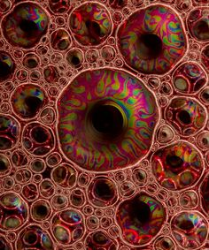

Контакт
Должен вам сказать, что мы вовсе не хотим завоевывать Космос. Мы хотим расширить Землю до его границ. Мы не знаем, что делать с иными мирами. Нам не нужно других миров, нам нужно зеркало. Мы бьемся над контактом и никогда не найдем его. Мы в глупом положении человека, рвущегося к цели, которая ему не нужна. Человеку нужен человек! ("Солярис")

Карта подземного мира со всеми своими условными обозначениями скорее напоминала схему электрического прибора. При виде ее неподготовленный человек нескоро сообразил бы, что к чему, если бы сообразил вообще. Крис сидел, откинувшись на спинку стула, крутил ручки микшера и нервно грыз кончик карандаша. Последние пять минут кто-то долго и упорно пытался что-то ему втолковать, но он ничего не слышал. Он сидел, уставившись в одну точку на экране перед собой и крутил ручку эха.
- Ты меня слушаешь или нет? Я кому это все говорю? - сказал грубоватый голос над самым ухом у Криса
- А? Да-да, конечно, продолжай, - пробормотал Крис, словно спросони
- Так я и думал. Ничего ты не слышал.
- Эдди, ты вроде говорил что-то про пустоту в туннеле, или я путаю?
В комнате горела тусклая лампочка. Ее света хватало, чтобы разглядеть ручки микшера, но было явно недостаточно, чтобы увидеть бардак месячной давности. Завтра должна была приехать тетушка, и тогда начнется настоящий кошмар...
- Смотри сюда, - длинный прыщавый парнишка лет двадцати пяти повертел у Криса перед глазами каким-то самодельным горе-прибором,сделанным на коленке в гараже, напоминающим выживший из ума осциллограф, - мы вчера намеряли 35 кси-единиц в туннеле в двухстах метров от конечной. Мы промеряли пустоты. 35 это очень высокий коэффициэнт.Ты хоть понимаешь, что это значит?
- Нет, - Крис безразлично помотал головой
- Ты меня разыгрываешь? Это значит, что за стенкой пусто.
- Как так пусто? - спросил Крис, скорее чтобы поддержать разговор, поскольку Эдди не унимался
- А вот так это. Пусто.
- Ну и что с того? Может, там соседний туннель, да мало ли что!
- В том-то и дело, что ни на одной карте там ничего нет. Глухо. Причем на много метров вокруг глухо.Но там просто не может быть глухо, вот чего! Иначе какого черта там наверху люки?
- Люки?
- Да, люки, причем они задраены. Слушай, я тебе говорю, дело верное, видать, мы их нашли. Это они задраили люки. Изнутри. Они давно там живут, уже не первую сотню лет.
- С чего ты это взял?
- Хромой так говорит.
- Да мало ли что Хромой говорит!- вспылил Крис, слушать эти разговоры становилось невыносимо, - он еще, говорят, крем от радиации в свое время запатентовал и апахала, чтобы отгонять дурную энергетику. О боже, чего ты от меня хочешь, я диджей, а не уфолог, можешь гоняться за зелеными человечками сколько тебе влезет, только меня в это не вовлекай.
Крис поворачивал ручки микшера, задвигая в ноль ручку громкости, но музыка становилась только громче. Через несколько секунд он понял, что атональная музыка играла в его голове. Ему часто снился этот кошмар - он поворачивает ручку громкости в нуль, а музыка становится все громче.. и громче,.. и громче.. сначала просто невыносимо, потом оглушительно, стучит в висках, в ушах, в кончиках пальцев тысячью маленьких сердец, вот-вот пойдет кровь из носа, он затыкает уши, но и это не спасает, она оглушает его, он кричит от ужаса, музыка забирается внутрь него сквозь открытый рот густым зеленым сиропом, переполняет его, он захлебывается, тонет в ней и просыпается...
Крис помотал головой. Все стихло. Почти все. Слегка потрескивала тусклая лампочка.
- Вот и проверим,что нам мешает? - спросил Эдди
- Как ты собираешься это проверять? А если всех своих пришельцев распугаешь?
- Я не знаю, пришельцы там или нет. Но там точно что-то есть. Надо лишь немножко пробурить стенку.. но это я уже с Хромым договорился, он мне ключи от склада дал, так что, считай дело в шляпе. Там толщина стенки-то в одном месте сантиметров полметра, не больше..
- Вот чего вы ко мне привязались-то, диггеры чертовы. Дай вам волю, вы все под землей перекопаете, а мы потом все провалимся.
- А ты чего такой злой-то? Братишка на Проксиму улетел, говорят?
- Да тебе-то что? - Крис стукнул по столу кулаком, лицо его перекосилось, - я должен был лететь, понимаешь? Я!
- Я думал, ты это перестрадал уже, когда тебя погнали оттуда год назад.
- Мы же вместе проходили отбор, потом тренировались... он всего-то на два месяца старше
- И чего?
Крис в темноте чертыхнулся
- Не прошел.
- Отчего?
- Забраковали, гады... приходит такой из себя весь.. красавец! все про вся знает.. тип такой в белом халате, и начинает мне втирать... то да се... в общем, психически неустойчив.
- Понятно.. сочувствую
- Сочувствуешь? Да это я нам всем сочувствую! Там же все по-настоящему, боже, как же я хотел там оказаться...
- Я думал, у тебя уже это переболело.
- Я тоже так думал. А вчера получаю от Тома сообщение - сегодня он в первый раз выйдет на связь, а они завтра стыкуются.
- Это с той самой чудной станции, где пришельцы поселились?
- Об этом тебе тоже Хромой рассказал?
Эдди замялся
- Да нет.. но а чего же они там тогда все вымерли-то? Вроде, говорят, надыбали они там чего-то в космосе, то ли на астероиде, то ли откуда еще, чтобы поизучать.. а оно их и скушало всех. А завтра ваши будут стыковаться с мертвой станцией, и их та же судьба ждет. Так что радуйся, что тебя там нет - дольше жить будешь.
- Ненавижу желтую прессу. Скорей всего, они погибли от радиации во время погрузки образцов. Та станция была запущена несколько лет назад, она оснащена похуже. За это время было изобретено много полезных штук. Знаешь чего, Эдди.. это нам завидно, у них же все по-настоящему. А мы здесь как дураки... какое-то метро, какие-то туннели.. нам только и остается, что мечтать о космосе и играть в космос в то время, как они... Ты понимаешь, что я хочу сказать?
- Да понял я все. Кстати, не факт, что те ребята вымерли...
***
Том доедал макароны, уныло уткнувшись в тарелку
- Ну сколько же можно переживать. Ничего, полетишь в следующий раз
- Ты не понимаешь. Я должен был лететь. Я! А не этот раздолбай
- Крис твой брат. Даже больше: брат-близнец. И мне кажется, он вполне заслужил
- Он? Я готовился, я ходил на сборы, я тренировался. А он? Чего он сделал, кроме того, что валял дурака, изображая из себя ди-джея в каком-то из ночных клубов. Почему он, а не я?
Дед пожал плечами.
- Ну, в конце-концов, это проверка на стойкость. Стойкость характера проявляется не только в космических глубинах - что толку от всех твоих тренировок, если уже год ты ведешь себя как сопливый мальчишка и не можешь простить брату его удачу - какой же из тебя астронавт?
- А из него какой? Астронавт-диджей - представляю себе. Он, видимо, братьям нашим космическим будет свою музычку втюхивать. Завтра они стыкуются с мертвой станцией. А я тут сижу как дурак и хожу на эти чертовы тренировки.
- Да что это тебя прорвало сегодня?
- Вчера получил от Криса сообщение. Завтра стыкуются с мертвой станцией. Ничего, они там тоже все передохнут от радиации или чего еще там. Вот чего Криса туда послали - видимо, всех посылали, кого не жалко.
- Я больше не желаю этого слышать. Уверен - будь Крис на твоем месте, он бы за тебя был искренне счастлив. И правильно все сложилось - космос не для таких как ты.
Дед встал и вышел из кухни, хлопнув дверью.
***
Крис глядел в монитор. Он не знал, что в таких случаях надо говорить. И, что самое главное, говорить ничего не хотел - ему нечего было сказать брату. У Тома там, на Проксиме, новая жизнь, он ушел далеко вперед.. Будет смотреть на Криса и пренебрежительно поплевывать свысока. Ну уж нет! Этого я ему не позволю.
За целый год это была первая возможность поговорить. До этого времени корабль двигался в гиперрежиме и все разговоры были прерваны из-за временно-пространственных искажений.
Крис долго искал место, на фоне которого можно показаться Тому. Сначала он думал показаться ему на фоне хорошей тачки - якобы его нового приобретения, но потом решил, что Том мигом его раскусит. Он не придумал ничего лучше, чтобы повесить на дряхлую исписанную стену черное бархатное полотно и включить камеру - пусть думает, чего хочет.
Монитор моргнул. На нем высветилось довольное лицо Тома на темном фоне.
- Ну, здравствуй, Том. Почти год не виделись, однако. А ты даже не постарел.
- Привет. А ты верен себе - все носишься со своими дурацкими шуточками.
- Я тоже рад тебя слышать!
Возникла неловкая пауза. Крис ждал, что Том что-нибудь скажет первым.
- Ну как ты, братишка? - спросил он, чтобы заполнить паузу
- Отлично. Ты?
- Превосходно. Какие у вас новости?
- Особо никаких.
Крис понял, что его сейчас стошнит от этого обмена любезностями.
Вопросы про Проксиму он решил оставить напоследок - дескать, ему наплевать, чего там в далеком космосе. Он даже рад, что не полетел.
- Как там Проксима? Стыкуетесь завтра, значит?
Том удивленно моргнул
- Ты опять со своими дурацкими шуточками? Или у вас там в космосе мозги отшибло? - спросил он, нахмурившись
Крис на секунду замешкался.
- Чего-то я не понял... - пробубнил он
- Да потому что ты никогда ничего не понимаешь! Какого черта тебя взяли в экспедицию?
- Том, Томми..подожди...
Крис почувствовал, как по его спине прошел холодный пот. Что там, на Проксиме, могло случиться с его братом? Связано ли это как-то с гибелью прошлой экспедиции? Почему его брат общается с ним, словно чокнутый?
- Чего, нужны проксимианам диджеи?
- Так, Томми. Стой-ка. Где ты сейчас находишься?
- В зоопарке, где же еще!
- Том. Это не смешно. Это важно. Ответь мне, где ты находишься.
- Да какая к чертям разница! Твое-то какое дело?
- Том. Я тебя прошу. Пожалуйста...
Крис ощущал отчаяние. Том, похоже, заболел, серьезно заболел, или кто-то с ним что-то сделал.
- Дома я у себя, где же еще, - закричал Том, и с этими словами сорвал черное полотно со стены, - на, на, смотри! Давно нашу конуру не видел? Полюбуйся.
На заднем плане Крис разглядел... их с Томом комнату, в которой он сам сейчас находился.
Он замер и нервно сглотнул.
- Том. Послушай. Кое-что произошло. Отнесись серьезно. Мы ведь с тобой никогда не говорили серьезно. Не надо язвить. Смотри, ничего не говори пока.
Том на том конце, видимо, немного растерялся.
Крис быстро скинул темное полотно и за его спиной открылась стена их комнаты.
- Что это за чертовщина? - спросил Том, - Ты опять меня разыгрываешь?
- Да нет же, заткнись, идиот, - Крис от бессилия сорвался на крик, - неужели ты не видишь, что дела очень хреновы и ты серьезно попал! Какого черта ты на Проксиме, а за спиной у тебя виден наш дом?
- Я на Проксиме? - переспросил Том, - подожди-ка, Крис, я-то с дедом дома, это ты улетел!
- Том, неужели ты не помнишь, как ты поднимался на корабль? Я идиот, тогда даже не пошел тебя проводить
- Это я не пошел тебя проводить. Я тебе сто пудов говорю - я дома. А у тебя крыша едет.
- Я уверен в том же самом - ко мне тут Эдди заходил...
Том несколько секунд растерянно моргал.
- Я точно знаю, что я не на Проксиме, - вконец сказал он
- И я знаю то же самое - ответил Крис.
Том хмыкнул. Крис нервно рассмеялся
- Ты чего? - спросил Том
- И каждый из нас двоих считает, что другой сошел с ума, - сказал Крис.
- Ну хорошо, - сказал Том после минутной паузы, - давай подумаем. Один из нас на Проксиме. Другой - дома.
- В точку.
- Черт, это значит, что один из нас хорошо попал...
- Осталось лишь определить, кто, - задумчиво произнес Крис
- Есть идеи?
- Пока нет. Мне надо это все переварить. В голове не укладывается.
- Посоветуюсь-ка я с дедушкой, - пробормотал Том.
- Даже не думай! - вскрикнул Крис
- Это еще почему?
- Поскольку если ты на Проксиме, это значит, что дедушка... не твой дедушка.Что будет, если они узнают, что мы знаем...
- О черт!
В этот момент до Криса дошла вся суть ситуации. Вдруг... а правда, а вдруг.. Том прав? И Том сейчас на самом деле дома?
Ужас подступил к горлу Криса, он почувствовал себя настолько одиноко, как никогда. И ни Эдди, никто.. никому нельзя ничего говорить, если Том прав. И единственный, с кем он может поддерживать хоть какую-то связь - это Том, который находится за миллиарды миль, на планете, которая меньше, чем точка. На которую, может, он никогда не вернется... И Том - его единственная надежда выбраться..
Да нет же, черт возьми! У Тома просто поехала крыша!
Или все-таки нет?
***
Том ходил по комнате кругами. Он осмотрел все предметы, все перетрогал, перещупал.
Несколько раз он сам порывался рассказать деду о том, что Крис в космосе сошел сума. Ведь вокруг все такое настоящее! Такое земное. Том цеплялся за эту спасительную ниточку - за сумасшествие брата.
С другой стороны, он пытался придумать хоть что-то, чтобы помогло ему доказать и себе и Крису, что именно Крис сошел с ума. Том долго думал. От переживаний у него исчез аппетит. Он пропустил тренировку, сославшись на простуду.
Один из них дома, а другой... находится в плену проксимиан и смотрит сны о земле под гипнозом. Они даже комнату воссоздали, гады! Или что еще хуже.. нет уже никакого брата, вместо него с ним общается проксимианин, высосавший память Криса. А что если.. с Крисом общается не он, то есть он - это не он... сам он - проксимианин? Так, хватит!!
Том, стараясь подавить приступ паники, закрыл лицо руками.
Пока они говорили с Крисом, он не чувствовал такого страха. Видимо потому, что все время ждал от Криса подвоха, ему казалось, что эта несуразица вот-вот разрешится. Но время шло...
- Ну что, Том, - спросил дед, обеспокоенный состоянием внука, - это общение с Крисом оказало на тебя такое действие?
- Да нет... - выдавил из себя Том
- Значит, все-таки да... печально это.
Том взглянул на деда, вглядываясь в его морщинки, его старые поблекшие глаза. Дед был таким, как был всегда, и в то же время, что-то в нем было иное... Может, это то, чего Том никогда раньше просто не замечал?
Ужас прошел по его спине. Что это за странный браслет на руке деда? Таких браслетов просто не бывает! Это чертовщина какая-то! Так..
- Слушай, дед...
- Да, Том
- Нет, ничего...
Том оборвал себя на полуслове. Черт, вдруг дед увидит, что он заметил нестыковку и в этот момент превратится в кого-то ужасного... Да нет, бред какой-то!
- Говори, раз начал. Я тебя выслушаю. Только попытайся вести себя как мужчина.
- Да я не о том, - выдохнул Том, замер на секунду, и... решился. Как можно более непринужденным тоном он спросил: Дед, а что это у тебя за браслет на руке.
- Как что?- дед поглядел на Тома удивленно, на его лбу появились две поперечных морщинки, - ну вы, мальчишки, даете. Что ты, что Крис! Я же его уже второй год ношу
- Но почему он... такой.. Странный, с выступами
- Бабушка-бабушка, а почему у тебя такие зубы, - передразнил дед, - на самом деле, это не браслет, - сказал он заговорческим шепотом.
Том поёжился, глаза его округлились
- Да что ты, в самом деле, - удивленно спросил дед. Это же мой браслет, поддерживающий сустав. Я его второй год ношу после того, как сломал запястье. В старости оно все медленно заживает.
- Никогда раньше не видел...
- Ну конечно, вы так поглощены собой, дальше своего носа ничего не видите.
***
Подходил момент связи с Крисом - они взяли паузу, чтобы все обдумать. Но Том так ничего и не мог придумать. Он долго сидел перед экраном компьютера и глядел в него стекляными глазами.
Когда лицо Криса появилось на экране, Том выпалил:
- Крис, у нашего деда на руке есть браслет?
- Какой еще браслет? - удивленно спросил Крис
- Черный такой... для поддержки сустава
Крис пожал плечами
- Не видел... хм.. не помню
- Слушай, это важно. Пойди, спроси у деда.
Крис вернулся через минуту. Никакого браслета после перелома дед не носил.
Том вкрадце рассказал брату историю с браслетом.
Минуту Крис сидел в молчании. Затем вкрикнул так, что Том даже подскочил
- Бинго! Я знаю, как определить, кто из нас в космосе, а кто дома! Я идиот!
- И как? - напряженно спросил Том, сердце его заколотилось
- Вокруг нас же есть куча вещей, на которые мы не обращаем внимания! Задача заключается в том, чтобы одному из нас найти нестыковку. Каждый из нас помнит что-то, что не помнит другой. И о чем знает кто-то еще. Пусть это даже какая-то мелочь. Например, о моем разговоре с Эдди годичной давности знаем только Эдди и я. Но ты можешь у него спросить. Если он тебе расскажет все так, как было, значит он - настоящий Эдди! То есть ты - дома. Понимаешь?
- Нет пока.. - сознался Том.
- Ну смотри. Пусть в космосе находишься ты. Значит, ни ты, ни фальшивый Эдди не может знать о наших разговорах, верно?
- Да.
- Теперь понял?
- Вроде да... Но это прокатит только в том случае, если память до полета у каждого из нас сохранилась в целости и сохранности.
- Ладно, Том, давай исходить из того, что у кого-то из нас временное помутнение, а память о прошлом у нас не затронулась.
- Давай попробуем это проверить, Крис.
- Как?
- Я начинаю рассказывать о событии из прошлого, ты продолжаешь
- Идет.
Несколько часов они наперебой рассказывали друг другу события из прошлого и периодически, забывая обо всем, впадали в старые пререкания. Лишь одно они обошли стороной - эпизод из далекого детства, происшедший на болоте. Прошли мимо него, не сговариваясь. К ночи они абсолютно выдохлись и Том провалился в длинный сон, сотканный из цветастых сумбурных эпизодов. Вновь и вновь перед его глазами вставал старый домик на болоте, вновь и вновь оттуда выходил Крис, вновь и вновь он убегал.. и вновь этот случай ставил крест на их нерушимой дружбе. Никогда в жизни они об этом не говорили, но всегда помнили... и не могли друг другу простить то, о чем кроме них двоих никто не знал.
Туманы и вода, хлюпающая под ногами.. бульк.. бульк..
Том бежал со всех ног, в сковавшем его ужасе, ноги увязали. За ним гнались полчища чудовищ, а он не мог сделать и шагу.
Он проснулся в ночи от собственного крика.
***
Крис чувствовал, что сходит с ума. Он оказался в абсолютно незнакомом мире людей и вещей. Начать хотя бы с его собственного дома. Что это за картины, развешанные на стенах? Неужели они здесь висели всегда. Взять хотя бы этот маленький неприглядный пейзажик. Да не было его! Хотя дед клянется и божится, что он здесь всю жизнь висит.
Неужели такая она, Проксима... Все прочитала из его памяти, все реконструировала. Все да не все. Закрались ошибочки... Но вместе с тем все такое настоящее. С одной стороны, больше всего на свете Крис боялся найти какую-нибудь вещь, явно принадлежащую не этому миру - доказательство тому, что он в космосе. С другой.. ему стало бы легче. Появилась бы определенность.
Крис чувствовал себя в подвешенном состоянии. Он изучил каждый кубический сантиметр дома, но не нашел ничего, чтобы выдало ошибку космических обитателей.
И еще несколько дней назад он завидовал Тому и беззаботно трепался с Эдди о каких-то там пустотах!
***
... Знаете, иногда такое бывает, что то, чего ты так долго ждал, вдруг оказывается совсем близко - даже не верится, но даже боишься подать знак, хотя внутри переживаешь всей душой приближение этого события - боишься, чтоб не сглазить. После нескольких попыток, когда оно ускользало, словно ящерица, оставляя хвост у тебя на руке, уже боишься случайно прогнать удачу, такую легкую и неуловимую, словно бабочка - чуть задержишь сачок - и она уже улетела, порхает среди майской зелени под голубым небом.
Или над аквариумом с хлореллой под куполом среди космической черноты. На той неделе я видела бабочку, да-да, бабочку, случайно залетевшую к нам гостью, каких у нас отродясь тут не водилось - словно маленький гостинец с далекой Земли. Откуда она могла здесь взяться? Разве только в почвогрунте завезли одинокую личинку.
- Неужели на этом, черт возьми, спутнике, нет даже ни одной бактерии? И тогда какого черта, спрашивается, мы завозили все эти антибактериальные установки? Смертельно опасные токсины?
- Нет, Гарри, - ответил Рой, маленький щуплый очкарик с ввалившимися щеками и поправил очки на носу, - за все это время - ничего губительного
- Вот как? Видимо на этот раз мы перестарались - отдел токсикологии зря поедает свой хлеб. Хотя подумать только... одни эти розовые лишайники чего стоят. И куда они периодически деваются, кстати? Позавчера делал облет - вся поверхность в лишайнике, сегодня завел свою старушку, прокатился до шахты - тишь и гладь, лишь кратеры.. и пыль такая.. ленивая сволочь.. медленно оседает, словно специально на нервы действует. Так что ж, эти лишайники - неужели не ядовиты?
- Я, конечно, не проверял на себе. Но эксперты говорят, что нет. Дело в том, что они СЛИШКОМ чужеродные. Это и не лишайники вовсе
- Что значит - слишком чужеродные?
- Как правило ядом для нас является то, что участвует в нашем метаболизме, "встраивается в замок как неправильный ключ и блокирует вход" - схожее по структуре, с нашим, привычным... а эти лишайники.. они как пластик. Никакие. Слишком чуждые. Без вкуса и запаха. У нас таких рецепторов-то нет - судя по всему - съешь такой, а он и выведется не переваренный. Но я бы тебе не советовал экспериментировать. Будь оно немного более "нашим" - оно, наверное, было бы убийственным... а так.. бог его знает
- Понял, - еще не полный, но уже заплывающий жирком Гарри усмехнулся и поправил пушистые темно-русые усы, - ну что, как насчет перекуса? Пойду, поджарю себе чего-нибудь более земное. Вы как? Тебе что-нибудь принести? - Гарри обернулся в мою сторону и вопросительно глянул на меня
Я помотала головой
- А чего так? Не проголодалась?
Я пожала плечами и улыбнулась
- Ты сегодня какая-то неразговорчивая, мадмуазель
Гарри прибыл только позавчера, еще продолжал осваиваться, хотя внешне старался держаться так, словно пробыл здесь с нами целую вечность
- Хедра вообще неразговорчивая, привыкай, - Рой пожал плечами
- Как так вообще? - Гарри скептически поглядел в мою сторону, - и в правду, я от нее сегодня слова не слышал. Она вообще разговаривает?
- Да. Отвечает. Хедра, расскажи-ка Гарри механизм, по которому двухфазный квазиисточник генерирует поле природы икс-джи
Не поднимая глаз на Гарри я начала
- Все основывается на эффекте кольцевого тока, возникающего в плазме с внутренней стороны тороидального...
Я видела, как глаза Гарри потихоньку расширяются. Именно такого эффекта Рой и добивался.
Они всегда так... глядят на меня как на обитателя местной флорофауны, на Ту, Которая Умеет Работать с Икс-Джи. Они оба были очень далеки от темы, поэтому просто до них не доходило, как я им с помощью мудреных слов рассказываю банальные вещи - сколько будет дважды два. Можно было бы сказать проще - вот есть винтик, вот отвертка, закручиваешь в одну сторону - раскручиваешь в другую. Наоборот не выйдет. Ну резьба такая, ты хоть тресни! Так и в нашем случае примерно то же самое, только слов побольше.
- Ууууу, - под конец протянул Гарри
Этого всепонимающего Уууу хватило. Больше вопросов насчет меня он не задавал.
За все те годы, что я провела на станции, я долго наблюдала за растениями - привезенными с земли - и за чужими, здешними... У всех и каждого есть своя экологическая ниша - если хочешь выбраться - надо либо адаптироваться и мутировать, либо погибнуть. У меня тоже как и у растения - есть своя ниша. Мне удивляются, но ко мне привыкли, при мне ведут любые разговоры, думая, что я где-то далеко, где-то в себе, что мне все безразлично. Я всегда все знаю и все слышу, я вкурсе всех дел, что творятся на станции - никто от меня почти ничего не прячет. А я этим пользуюсь... Лишь я одна на всей станции знаю, какой мелодией пахнут розовые лишайники...
- Так что ты понял, Гарри - если у тебя возникает какой-то вопрос по Икс-Джи - обращаешься непосредственно к Хедре. Мне еще много надо тебе показать - ты остаешься вместо меня - я послезавтра уже покидаю наконец-то этот треклятый Тахидаурус. Прощай - Проксима, ты у меня уже в печонках сидишь!
- Как? Уже?
- Что значит уже? Все, моя смена кончилась - я подзаработал деньжат, теперь можно возвращаться на Землю. Я давно обещал моей малышке свозить ее на Сейшелы. Еще немного задержусь тут - и она начнет крутить романы на стороне
Гарри понимающе кивнул
У нас никто надолго не задерживаются. Люди приезжают сюда на заработки - приходят и уходят, и так всегда. Здесь, как заметил Рой, действительно все слишком ЧУЖОЕ. Пески, кратеры, бледно-золотая медленно оседающая пыль... и вселенский холод. Иногда пробивающийся розовый лишайник. Но это лишь снаружи...
Они не выдерживают. Полгода - очень правильно выверенный срок для них. Задержись они чуть больше - и начинают сходить с ума - не в буквальном смысле, конечно. На них находит сентиментальность и разговорчивость иногда доходящая до словестного недержания, они готовы излить душу первому встречному. Перестают спать по ночам и не находят себе места. Человеку важно чувствовать "почву" под ногами, земную почву. Они приходят, потому что здесь хорошо платят, потому что здесь шахта, думая, что задержатся на год, но еле дожидаются конца контракта и под любым предлогом уходят. Мало кто остался.
***
Крис постучался в деревянную дверь с аккуратной табличкой, текст которой он не удосужился прочитать.
- Открыто, заходите, - донесся голос из-за двери
Крис вошел и огляделся по сторонам. Перед ним, в светлой просторной комнате за большими мониторами сидели люди. На мониторах отображались какие-то модели, показавшиеся Крису невообразимо сложными
- Ба! Да это же Том! Том, как ты здесь оказался? Ты же улетел на Тахи.. Тахидаурус? Ну, станицию эту, которая крутится неподалеку от Проксимы вокруг какой-то планеты. Когда успел вернуться? - спросил человек с трехдневной щетиной и в поношенном свитере. Он поднялся со своего места, не выпуская из руки чашку с кофе и подошел к Крису. Крису ударил в нос густой кофейный аромат.
- Том до сих пор на Тахидаурусе, - ответил Крис. Он увидел как глаза собеседника расширились в удивлении и продолжил, - меня зовут Крис, мы близнецы.
- Близнецы! Вот те на! Почему я никогда не видел вас вместе?
- Потому что мы слишком разные, у нас с Томом не было ничего общего.
Человек с кофе понимающе кивнул
- Хочешь кофе, близнец? Меня зовут Альберт, я начальник отдела. Решил разведать, где братишка работал?
- Да, - кивнул Крис, - я поймал себя на том, что я, в сущности, ничего не знаю про Тома. Мы столько лет жили под одной крышей, а я знал о нем меньше, чем о любом из моих приятелей. Сейчас мне захотелось наверстать упущенное.
- Понимаю, - ответил Альберт, - скучаешь по брату?
- Можно и так сказать, - пожал плечами Крис
"Интересно, если бы я улетел на тахидаурус и потом через несколько дней объявился бы в своём клубе, где я работаю диджеем, " - подумал Крис, - "кто-нибудь бы заметил, что меня не было? И даже если бы и заметили, хоть кто-нибудь удивился бы? Нет.. у меня контингент другой. Скажи им, что меня телепортировали проксимиане с секретной миссией, они бы только обрадовались.. и забыли. У нас столько чудаковатого народа, одни эти уфологи чего стоят с бандурами на головах!"
- Знаешь, Крис. Несмотря на то, что Том пришел к нам совсем недавно будучи студентом, он выдвинул отличную идею. Пойдем, покажу тебе его проект самоочищающейся системы класса 3-А. Тебе это ни о чем не говорит, но поверь - вещь крайне полезная. Так вот он нашел неожиданный подход. Конечно, в ней много огрех, но как же без них? Я думаю, из него получится отличный проектировщик.. когда он вернется. Нам его очень не хватает.
"Хоть кто-нибудь, ну хоть кто-нибудь один.. сказал бы, что им не хватает моей музыки? Что им меня не хватает? Вряд ли.. на моё место пришел бы кто-то еще, а меня бы сразу забыли" - думал Крис, пока Альберт рассказывал и показывал на мониторе ему сверхсложные схемы, которые сделал Том, - "я всегда считал, что так как живет Том - нельзя жить. Работать от звонка до звонка. Больше всего я ценил свою псевдосвободу - делаю чего хочу, когда хочу, никому ничего не должен. Только в результате вышло, что я никому не нужен... Я издевался над Томом, видя аккуратные конспекты его лекций - на что ты тратишь время! Молодость уходит, а ты совсем зарылся в своих бумажках. Пойдем в клуб, познакомлю тебя с хорошенькой девочкой (или с каким-нибудь помешанным уфологом на худой конец). Он обижался и прогонял меня. И теперь он делает какие-то сверхсложные системы, а я смотрю на это и ничего не понимаю. Но главное-то не это. Главное, что он каждый день приходит к людям, которые его ценят и ждут...
Почему мы никогда не говорили об этом с Томом? Мы могли бы столько всего обсудить"
Крис возвращался домой, перебирая в голове все, что узнал о проектах Тома. Как только Том выйдет на связь, они смогут сверить информацию, полученную Крисом. Если все, что у знал сегодня Крис от Альберта, окажется правдой, это означает... что на тахидаурусе все-таки Том. А если не окажется?
Крис наспех перекусил и отправился к себе в комнату на второй этаж, ожидая связи с братом. Дед задал ему несколько вопросов, Крис бросил ему что-то на лету.
Сегодня все прояснится! Неужели?
Сердце Криса бешено застучало.
Спустя несколько минут лицо Тома показалось на экране монитора. В этот раз оно было грустное и подавленное.
- Привет, Том! Я должен столько тебе всего сообщить, - выпалил Крис
- Крис, - начал Том медленно, с расстановками, - это я должен тебе кое-что сообщить, - он опустил глаза, - прощай, Крис. Больше я никогда не выйду на связь. Прости меня за все - за то, что произошло там, на болоте.. Ты был прав - я оказался трусом.
- Том, что с тобой? - перебил его Крис
- Прости Крис, но тебя не существует. Ты всего лишь плод моего воображения. Я хотел лишь извиниться, я не могу больше в себе носить ощущение вины, которое сидело в подсознании столько лет. Ведь там, на болоте, ты умер, Крис...
***
Том доедал свой ужин в ожидании очередного сеанса связи с Крисом. Сегодня он посетил его клуб, поговорил с чокнутыми уфологами и задумался: пусть все это - чушь собачья, но ведь нельзя же всю жизнь жить абсолютно правильно, делать только то, что нужно, за что тебя любят и ценят. Ведь должно же быть в жизни место шалостям, юношескому задору. Ведь в душе он всегда хотел сделать чего-то эдакое, неправильное, но сначала боялся порицания взрослых, потом преподавателей, потом коллег по работе. А ведь он еще молод! Пока внутри столько пыла, столько эмоций - это же все надо проживать а не заталкивать внутрь себя, стыдясь этого как чего-то, что достойно только презрения. Напрасно что ли природа дала нам такую гамму чувств?
А Крис - нет. Он не такой. Ему плевать было на то, что о нем думают. Я всегда говорил, что он транжира - транжирит время направо и налево. Это еще вопрос - кто из нас больший транжира... Не я ли растранжирил на сверхважные, абсолютно правильные вещи свою жизнь? Неужели это можно было понять только после того, как Крис улетел. Да.. они столько всего могли бы обсудить..
На кухню вошел дед. Вид у него был задумчивый. Казалось, он хотел что-то сказать, но не знал, с чего начать.
Том почувствовал что-то неладное. Что-то в деде было не так. А может дед.. уже не дед?
- Послушай, Том. У меня к тебе серьёзный разговор.
- Я слушаю, - сказал Том и сглотнул
- Ты часто общаешься с Крисом?
- Каждый вечер
Дед покивал головой
- Ты что-то имеешь против?
- Мы думали, что так будет лучше... что мы отправим его в далекую экспедицию на долгие годы, ты потихоньку про него забудешь.
- Забуду? Что это значит?
- Том, расскажи мне, что произошло тогда, на болоте. Когда вы были детьми.
Том почувствовал необъяснимое беспокойство, затем тревогу, переросшую в панику.
- Крис пугал меня. Мы шли по болоту. В какой-то момент Крис незаметно отстал. Когда я был далеко, он позвал на помощь. Я прибежал и увидел, как тонет в болоте его сумка. Я решил, что опоздал... Потом я узнал, что Крис в это время прятался в кустах. Он начал издавать какие-то звуки, от которых у меня началась паника и я бросился бежать. А потом он издевался надо мной, называя меня трусом!
- Трусом? Почему?
- Там было две тропы.. одна короче. Если бы я по ней побежал - я бы успел спасти Криса. Но она проходила по жиже. Я побоялся бежать по ней и выбрал тропу, ведущую по кочкам.
- Том.. после того случая ты долго не мог оправиться. Тебя лечили. Наш лучший психиатор не мог тебе помочь. Ты так и не сознался себе, что в тот день, на болоте, Крис утонул.
Том подскочил как ужаленный
- Утонул! Но ведь это невозможно, черт возьми! Я же с ним потом разговаривал.. он меня дразнил
- Так твой мозг защищался, не желая открывать тебе правду. Ты серьезно болен, Том. Мы долго общались с мистером Спендером по поводу тебя. Отправить Криса в экспедицию была идея Спендера. Ведь ты же ни разу не задумался о том, что в такие места, как тахидаурус не отбирают ни студентов, ни диджеев. Туда летят люди с соотвествующей квалификацией. Мы думали таким образом "мягко" устранить Криса из твоей жизни. Потом сообщить тебе, что он погиб во время одного из выходов в открытый космос. А потом, когда ты смиришься со смертью брата, рассказать тебе правду. Но все пошло иначе. Сейчас только ты сам должен помочь себе. Возьми себя в руки, будь мужчиной - или всей твоей карьере придет конец, ты проведешь всю жизнь под надзором психиатора! Крис умер много лет назад!
Том удивленно моргал
- Но ведь я же только сегодня был в его клубе, где его знают... Если он умер - как же он мог быть диджеем?
- Между вами, близнецами, всегда существовала какая-то связь. И после того, как Крис погиб и она была разорвана, ты должен был восстановить ее любой ценой. Том, ты восстановил Криса в себе. Теперь он - твоё альтер эго. Мне жаль тебе об этом сообщать, но у тебя раздвоение личности.
Некоторое время они молчали.
- Да-да, - продолжил дед, - ты раскололся на две части. Часть времени ты был Томом - примерным мальчиком, окончившим институт с красным дипломом. Но часть тебя желала чего-то другого - та часть, которую ты прятал от себя. Вот она-то и стала Крисом. Днем ты учился в университете, занимался проектом, а ночью гонял в клубе музыкальные подборки.
- Когда же я спал?
- Все эти годы ты почти не спал. Это странное генетическое отклонение. Оно встречалось у разных выдающихся личностей - вождей, людей искусства. Для сна тебе всегда было достаточно от двух до четырех часов.
Мысли Тома спутались. Некоторое время он пытался хоть что-то понять. Правда приходила медленно и очень мучительно.
- Именно поэтому план доктора Спендера пошел коту под хвост. В какой-то момент я допустил ошибку, сказав: твой брат улетел в космос. В результате этого каждая из твоих личностей поверила, что другая - улетела в космос. Тем самым я еще больше сбил тебя с толку.
- Но ведь я же отчетливо помню, - взмолился Том, - как мы общались, помню его, стоящим передо мной.. Помню его на экране монитора, помню как он издевался надо мной.
- Вечные издевательства и насмешки Криса - это постоянные скрытые муки совести. Ведь ты же знал, что мог выбрать другую дорожку... Нет, Том, ты не виноват. Выбери ты ее, сейчас, глядишь, я вообще остался бы без внуков. Ты правильно поступил.
- А если бы.. я спас его?
Том, история не терпит сослагательного наклонения. Но поверь - я рад, что ты принял именно это решение. Я говорю тебе это не для того, чтобы тебя успокоить. Это так. Ты не пошел на риск. И я этому рад. Да, ты видел Криса. Но видишь ли... мы никогда не воспринимаем настоящее. На самом деле, наше восприятие текущего момента - это всегда восприятие прошлого. Того, что произошло какие-то доли секунды назад. Мы видим не то, что видят наши глаза. Между получением сигнала и его осознанием проходит очень сложный процесс обработки этого сигнала в головном мозгу. Глаз получает изображения мира перевернутым. Мозг его переворачивает, объединяет картинку, полученную обоими глазами и выдает ее нам
- К чему ты это говоришь
- К тому, что за время этой "обработки" ты получал совсем не то, что было на самом деле. Ты видел Криса. Ты считал, что видишь его перед собой. Но это было лишь ложным воспоминанием...
Том уронил голову на руки
- Я знаю, как тебе сейчас тяжело. Но ты должен с этим справиться. Ведь то, что я тебе сказал, ты на самом деле знал всегда... Ты должен прекратить все контакты с Крисом. Окончательно и бесповоротно.
***
- А ты, Серж, почему задержался?
- А, чего? - спросил человек с щетиной трехнедельной давности, снимая наушники
- Спрашиваю, ты чего здесь задержался, - спросил Рой
- Ну так еще не работает, зараза такая. Закончу - пойду на обед
- Да я не о том.. Ты почему задержался на станции?
Черноволосый заплывший жирком Серж потер засаленый лоб.
- Я много раз подумывал вернуться на землю. И до сих пор подумываю. Хотя, я помню, как это было в последний раз - долго бродил по освещенной улице, заглядывал в чужие окна. Хотел заглянуть в чужую жизнь и вспомнить это как это.. жить как живут обычные люди. Навестил тетушку, в миллионный раз пообещал остаться, побродил по окресностям моего детства и понял, что я уже стал слишком ЧУЖОЙ тут. Вот и вернулся на Тахидаурус. Ничего, когда Хедра вернется на землю, тогда и я вернусь.
- Скорее уж наступит второе пришествие, - ответил Рой
- Скорее уж Хедра станет Вторым Пришествием, - съехидничал Гарри из коридора
- Хедра, а ты давно на станции?
- Не помню, - ответила я, - иногда мне кажется, что я здесь всегда.
В этом абсолютно чужом месте я рассказываю про Икс-Джи, здесь я в своей тарелке. Здесь всем гораздо важнее мои построения для квазиисточников, чем моё необычное поведение, здесь все настолько чужеродно, что на этом фоне я кажусь вполне даже естественной.
- А может и правда, Хедра, ты здесь была всегда? Еще до того, как построили станцию?
- Шутник!
- Чем больше мы отдаляемся от земли, тем больше ты очеловечиваешься, - сказал Серж, - это как диффузия. Ты становишься похожей на нас, в то время как мы становимся чужими Земле и сами себе.
- Да-да, - подхватил в шутку Рой, - кто-нибудь вообще прибыл сюда раньше Хедры? Бьюсь об заклад - никто. Серж?
- Когда я прибыл, Хедра еще не разговаривала.
- Вот как? А как же вы друг друга понимали?
- А нам и не надо было друг друга понимать. Она работала. Круглосуточно. Мне кажется, она даже не ела.
- А еще у нас слухи бродят, что Хедра при высадке на планету ходила к озеру без скафандра, - подхватил Рой
- А еще питаюсь лишайниками, - я ответила
- Ишь ты, она еще и язвит, - сказал Серж. А еще недавно она не понимала юмор.
- Хватить нести чушь, - говорю. - Я самый обыкновенный человек, просто слишком долго живу на станции. И никто не смеет у меня отнимать это право - быть человеком. Вам понятно?
- Конечно, Хедра. Извини, глупые у нас шутки.
***
Крис спускался в подвальчик, где находился клуб. В голове его по-прежнему звучал обрывок фразы: "...ты умер, Крис."
"Да что он там, совсем рехнулся? " - думал Крис, - "что они с ним сделали, эти чертовы инопланетяне... А может.. Нет, не может! Что-то не похоже происходящее со мной на загробный мир. Уж наверное, если бы я умер, я бы это запомнил? Все-таки не каждый день это с тобой случается."
Что делать, куда теперь идти? Брат не хочет выходить на связь. Поэтому все равно было куда направиться и Крис пошел в клуб.
Войдя он сразу направился к стойке, где заказал себе сразу три коктейля. Он чувствовал, что если сейчас не выкинет все из головы, рискует сойти с ума. Противоречивая информация переполняла его, вот-вот она вырвется наружу и захлестнет весь клуб, весь его мир..
С каждым глотком ему становилось все легче. В какой-то момент перед ним проявился Эдди и начал о чем заговорчески рассказывать, понизив голос.
- Сегодня мы навестим братьев по разуму. Хромой ключи дал
- Я думал, что вы уже на прошлой неделе...
- Да не вышло там.. предки свалились неожиданно. В общем, решили сегодня. Ты с нами
- Почему бы и нет, - ответил Крис, уже немного пьяный, - вот порадую благодарное человечество космической музыкой - и можете на меня рассчитывать
- Отлично. Все же 35 кси-единиц это тебе не хухры-мухры! Значит, втроём идем. Это хорошо
- А третий кто?
- Мыслитель, - ответил Эдди и кивнул на столик, за которым сидел наш приятель Рик и строчил что-то на бумаге огрызком карандаша.
- А он-то чего там забыл? - спросил Крис
- Как чего? Сегодня же у нас событие века! Контакт с другой цивилизацией.. не покидая нашей старушки-Земли
- Понял, - он кивнул и подошел к Рику, держа в руке бокал
- Можно? - спросил он, отодвигая свободный стул
- Садись, - не поднимая глаз откликнулся Рик, погруженный в свою работу
- Чего пишешь?
- Все тебе да расскажи, Крис.
- Рассказы?
- Бывает, что и рассказы.
- Хотя бы о чем?
- Обо всем. О людях, о космосе, о разных мыслящих формах.
- Круто! Это какое направление - научная фантастика?
- Направление - "конструктивный декаданс".
- Это как понимать?
- Пишу о пире во время чумы, на котором ценность жизни доказывается от противного. Иногда вопреки стараниям главных героев лекарство находится. Поэтому конструктивный
- А почему декаданс?
- Потому что, когда лекарство от чумы находится, порой уже некого лечить. Так же меня волнует проблема контакта.
- Контакта с инопланетной цивилизацией?
- В то время как фантасты всех мастей бьются над проблемой контакта с внеземным разумом, мне не дает покоя вопрос контакта человека с человеком. Порой между нами лежит бездонная пропасть - мы друг другу становимся инопланетянами, становимся чужими. И протянуть хрупкую ниточку, установить контакт задача еще более нетривиальная, чем, скажем, расшифровать генетический код. Ведь по сути, вдумайся - мы не слышим друг друга. Мы улавливаем в словах другого отражения наших собственных мыслей, идей и концепций, а порой - это кривые зеркала. Для передачи мысли другому нам приходится заталкивать нашу мысль в прокрустово ложе, облачая ее в слова. Мысль, которая несет в себе наши тревоги, радости, цвета, вкусы, запахи, наконец.. обтесывать и передавать другому в упакованном виде. А тот, другой, имея свой ассоциативный ряд, расшифрует её иначе. Возьмем словосочетание "жёлтый цветок". Для одного это - цветок солнца, подсолнечник, символ жизни, наполненный радостью. Для другого желтый цвет ассоциируется с желтыми блеклыми стенами, грязными пятнами, болезненным лицом - для него желтые цветы станут символом разрушения - болезненности, унылого существования. Для кого-то в них будет заключена неведомая боль, смятение, душевная буря. Вспомни желтые цветы Ван-Гога. И как бы усердно мы не объясняли - все равно что-то останется за кадром: легкая дымка воспоминания из глубокого детства, пережитое страдание, мгновение радости, связанное с произнесенным словом. Я считаю, что нашим ученым предстоит выполнить не менее важную задачу, нежели выход в космос - решить проблему контакта человека с человеком.
- Найти способ общаться телепатически?
- Пожалуй, да. Ведь это избавит мир от воин - каждый сможет понимать каждого, его скрытые мотивы, состояние души. Ведь иногда какие тернии надо пройти, сколько испытать и пережить, чтобы просто понять друг друга, разрешить давнешнее противоречие. Нас друг от друга отделяют тысячи световых лет и едва мы обретаем хрупкую ниточку - за нее стоит держаться, бережно хранить её, укреплять, ни в коей мере не давая ей порваться..
***
- А ну-ка помогите мне, бездельники! Стоят тут, глазеют, понимаешь! - сказал Эдди, вытирая пот со лба руковом. С помощью самодельного чудо-инструмента, который он достал у Хромого, Эдди только что закончил вырезать в стене прямоугольник
- Толкаем его внутрь!
- Может, не надо так сразу.. мы же не знаем, чего там, за стеной? - аккуратно спросил Рик
Крису тоже не понравилась эта идея. Он решил потянуть время
- Сейчас мы грохнем ее - легавые прибегут. Чего мы им скажем? Что за стенкой живут инопланетяне?
- Да откуда здесь в подземном туннеле в три ночи возьмутся легавые? Думаешь, они тут тебя с утра подкарауливают?
Крис огляделся. По бокам туннеля шли провода. Весь туннель был щедро исписан графитти. Сверху капала вода.
- Ну и черт с вами! - воскликнул Эдди, - не хотите мне помогать - сам справлюсь.
Эдди решительно навалился на вырезанный прямоугольник, чтобы протолкнуть его внутрь. Крис и Рик переглянулись и присоединились к нему.
Раздался грохот, поднялась пыль.
Когда пыль осела, через отверстие в стене показался точно такой же туннель, напоминающий как две капли воды тот, в котором они находились.
И все же, что-то в этом туннеле было зловещее. Нет.. даже не зловещее. Неправильное. Что-то, что выбивалось.. из чего? Поэтому и казалось зловещим. С другой стороны, это был самый обыкновенный туннель - они уже несколько таких прошли.
- Молодец, Эдди! Ничего не скажешь! Снесли стенку - попали в соседний туннель. А завтра работники метро будут гадать, что же это за идиоты, которым понадобилось ночью воевать со стенкой.
Эдди ошарашенно смотрел внутрь.
- Нет... это не возможно! - воскликнул он, - судя по всем картам, здесь должно быть глухо. Там просто физически не может быть туннеля. Он бы туда не поместился!
- А ты и рад всяким левым картам верить, - вставил Рик, - ладно, прогулялись. Давайте-ка сматываться, пока нам не влетело по первое число.
- Хорошо, - ответил Эдди, - но давайте-ка хоть посмотрим, что это за туннель, которого нет на картах. Чтобы от нашей вылазки была хоть какая-то польза.
Он шагнул в проём в стене.
Крис вздрогнул. Все-таки там было чего-то нехорошее. Но что?
Он бросил взгляд на лицо Рика и вздрогнул, увидев на нем испуг. Или показалось?
Двое шагнули вслед за Эдди.
Туннель как туннель.. все абсолютно как в предыдущем. Те же графитти, те же провода, так же сверху капает вода.. те же надписи на стенах..
Вот оно!
Надписи-то на стенах те же самые!
- Что это за чертовщина! - воскликнул Крис. По его спине пробежала струйка холодного пота
- Что такое? - спросил Эдди
- Надписи на стенах точно такие же, как и в том туннеле, из которого мы сюда попали
Эдди уставился на стены, окаменев
- Черт возьми! - выдохнул Эдди... - ведь этот туннель.. зеркальное отражение предыдущего
- Да, - начал Рик зловещим шепотом, - здесь же живут инопланетяне. Эти ребята не могли придумать ничего получше, чтобы копировать наши туннели, - он рассмеялся, - да что вы оба, сбрендили, что ли? Какие-то приколисты здесь все разрисовали, а вы и купились как идиоты!
- Ты думаешь?
- Да сто пудов! Верняк кто-то "устроил ориентирование на местности", вы же помните эту детскую игру.. записочки, надо найти клад. В одной записке загадка - где найти другую.. Туннели специально разрисовали одинаково, чтобы сбить их с толку.
- А что.. может быть, - протянул Эд
- Ладно, пойдем-те уже, время позднее, - сказал Крис, - завтра будем разбираться что к чему.
Они шли, перед ними окрывалась точно такая же серия туннелей, которые они прошли. Или просто похожая? Вполне возможно, что здесь все было спроектировано симметричным образом.
Когда они поднялись наверх, обнаружили, что вылезают из заброшенного вентилляционного отверстия в том месте, где спускались под землю.
Невдалеке стоял все тот же магазинчик, напротив идиотичные готы что-то выкрикивали на кладбище - ничего не поменялось
- Получается, мы вышли там же, где и спустились..
- Да, хитренькая архитектурка, - ответил Эдди
- Ладно, кто куда? - спросил Рик
- Я домой, - отозвался Крис
- Я занесу эту штуковину Хромому в сарай, - Эдди кивнул на чудо-машину
- Я в клуб, - ответил Рик.
- Там завтра встретимся и все обсудим.
В ночи Крис добрался до дома, проклиная себя, что все-таки решился на эту дурацкую вылазку. Аккуратно открыл дверь, прокрался на цыпочках в свою комнату, чтобы не разбудить деда. Лестница один раз предательски скрипнула. Крис прислушался. Дед спокойно спал.
Крис вошел в свою комнату, швырнул в угол вещи, скинул куртку и... обнаружил, что на его кровати кто-то спит.
Это еще что такое? Может, вор? Ага, вор.. залез, устал грабить и решил вздремнуть. Нет уж! Тогда кто же эти шутники? Кто бы это ни был, он у меня сейчас дождется!
Кровать скрипнула. Шум в комнате разбудил спящего, он повернулся и открыл глаза.
Крис вздрогнул.
Лежащий вскрикнул.
- Крис! Этого.. не может быть!
- Том?!
Оба растерянно мигали
- Как ты здесь.. оказался...
Несколько минут они глядели друг на друга в растерянности и несли какую-то чушь
- Крис.. видимо, у меня опять галлюцинации
- Вот еще! Я точно не галлюцинация - уж в этом я полностью уверен!
- Крис.. но ведь ты же умер.. там на болоте. У меня раздвоение личности
- Кто сказал тебе эту чушь?
- Дед
На лестнице послышались шаги. Крис быстро метнулся к двери и закрыл щеколду
- Том. Мы оба попали. Похоже, мы вместе отправились на этот чертов тахидаурус! Слышишь, Том? Похоже, мы не на Земле
- Нет, Крис.. нет!
- Том, открой, - раздался голос деда из-за двери
- Не открывай! - крикнул Крис
- Открой. У тебя галлюцинации
- Не открывай! Это обитатель местной мыслящей разумной формы! Это проксимиане, Том!
- Том, это все чушь! Я твой дедушка. Ты же все уже знаешь про Криса. Это твое альтер-эго. Настоящий Крис утонул на болоте
- Нигде я не тонул! В тот день я спрятался, желая испугать тебя. А ты купился!
- А если бы я кинулся спасать тебя по другой тропинке? Если бы в результате твоих шуток я бы утонул? - воскликнул Том
- Дурень, там же везде мелко было! Я там был сотни раз. Тогда я над тобой специально поиздевался.
- Том! Кто видел вас с Крисом вместе? У вас нет общих друзей, ничего общего.. вы оба - это ты
- Да, черт возьми, у нас нет ничего общего, - мы были безмозглыми дураками и не обращали внимания друг на друга. Теперь мы это исправим. Том. Подойди. Дотронься до меня. Я настоящий. Я клянусь тебе - я настоящий.
- Том, открой дверь! У тебя начался приступ!
Том глядел то на Криса то на дверь. Он метался. Несколько раз он порывался открыть дверь - здравый смысл говорил ему, что дед прав, но несколько раз его что-то останавливало.
- Том, посмотри на себя! Ты - мальчишка, студент. Крис - вообще диджей. Кто бы вас взял в полет к Проксиме? Открой!
Чаша весов склонилась в сторону деда.
Том соскочил с кровати, метнулся к двери и открыл щеколду.
Дед вошел в комнату.
- Дед, скажи, неужели кроме меня ты никого не видишь? Ведь вот же он - стоит рядом со мной
- Том.. мне горько это говорить, но ты здесь один. Просто тебе очень нужно, чтобы Крис был рядом. Ты до сих пор не можешь принять его смерть.
Крис смотрел на эту сцену молча. Внезапно его словно что-то осенило.
- Дед, а давно ты стал левшой? - спросил Крис
- Левшой? Я никогда не был левшой, - ответил удивленно дед
- У тебя браслет-то на правой руке. Ты его носишь на сломанном запястье для закрепления сустава. Когда ты сломал руку, я уезжал в другой город. И как браслет ты потом приобрел, я тоже не видел.. однако, я видел тебя на экране голографона со сломанной рукой.. Только экран - это ведь отражение. И я решил, что ты сломал правую руку. Я ошибся. Мы с Томом знаем твою привычку писать от руки, мы помним, что ты очень странно держишь ручку, отчего у тебя на руке постоянные кляксы. И ты писал от руки, когда сломал руку - ты же что-то записывал, когда я звонил тебе по голографону.. но не мог же ты писать, черт возьми, сломанной рукой! Это прокол.. сейчас, вы, кем бы вы ни были, допустили ошибку - у нас разная память на одно и то же событие. У тебя кляксы на левой руке, дед...
Том поглядел на Криса. Потом перевел взгляд на руку деда. Потом перевел взгляд на лицо деда и ужаснулся. Дед наклонил голову на бок смотрел на него страшным, нечеловеческим взглядом, отчего у Тома бежали мурашки по коже. Взгляд этот был глубокий, в нем отражалась бездна, от него веяло космическим холодом.
В это время за спиной Тома начало всходить гигантское бордово-красное солнце. Комната наполнилась жутким красным оттенком.
- Том, бежим, - крикнул Крис.
Дед перегородил дверь, но Крис метнулся в его сторону и оттолкнул его. Они за секунду слетели вниз по лестнице и оказались на улице.
Вокруг все было в оттенках красного и вишневого. Гигантское солнце, казалось, надвигалось на землю, готовое заглотить её.
А люди безмятежно проходили мимо, ничего не замечая. Красные люди под красным солнцем.
Дед выходил из дома и медленно к ним приближался.
Том кинулся вперед и натокнулся на какую-то женщину.
- Извините, мэм, - сказал он, взглянув ей в глаза. Затем вскрикнул
Она глядела на него все тем же ужасным немигающим взглядом, чем-то напоминающий птичий, что Том видел у деда. Взгляд бездонный и в каком-то смысле.. мертвый.
- Бежим в клуб, надо найти Эдди и Рика.
Том отвел глаза. Но женщина как и дед начала преследовать его.
Они бежали вперед, навстречу им шли люди, спешащие на работу. Стоило Тому посмотреть им в глаза, как в их глазах отражался все тот же жуткий взгляд и они начинали медленно преследовать его. Том оборачивался, а они шли и шли за ним, забыв про свои человеческие дела.
- Не смотри им в глаза, - крикнул Крис, - пока мы не смотрим им в глаза, они нас не замечают
По дороге в клуб они наткнулись на растерянных Эдди и Рика
Красное солнце освещало все зловещим красно-вишневым светом, но не грело - наоборот, от него, казалось, шел чуждый холод
- Что происходит? - воскликнул Эдди, - мы пришли в клуб, а там все...
- Я знаю!
- Все-таки мы наткнулись на инопланетян! - воскликнул Эдди
- Какого черта мы проломили эту стенку! Все из-за тебя! - закричал Рик
- Да не в стенке дело! - крикнул Крис, - мы четверо на тахидаурусе! С нашей памятью что-то случилось, мы ничего не помним. Надо выбираться отсюда
В этот момент они заметили, как люди с жуткими взглядами, медленно преследовавшие их, приближаются
- Бежим!
- Куда? - спросил Эдди
- В туннель. Все равно больше бежать некуда!
Что-то подсказывало Крису, что надо возвращаться в туннель. Хотя он сам не понимал, почему. Страшная мысль пришла ему в голову - а что если эти трое, тоже инопланетяне? Но тут же отогнал е. Чувствовать себя абсолютно чужим на гигантском расстоянии от Земли не доставляло большого удовольствия.
Они спустились в туннель в поисках прорезанного ночью прохода. Череда туннелей и впрямь была зеркальным отображением тех туннелей, по которым они спускались ночью в поисках пришельцев.
Когда они добежали до заветного места, вместо лаза перед ними была металлическая тяжелая круглая выпуклая дверь, содержащая на себе какие-то датчики и индикаторы.
Крис токнул ее, но она не поддалась. Вместе с тем дверь показалась Крису до боли знакомой. Но он не мог вспомнить, где ее видел.
- Что это за чертовщина! Когда успели ее вмонтировать?!
- Это шлюз, - ответил Рик, - это место стыковки
- Стыковки чего с чем? - воскликнул Эдди
Риш растерянно покачал головой
- Я не помню. Что-то произошло с моей памятью
Внезапно Крис увидел на лице Тома небольшую бородку. Обернулся на окружающих. Эдди уже не был прыщавым подростком. За то время, пока они бежали, они все постарели минимум лет на десять!
- Что с нами произошло? Мы постарели! - воскликнул Крис
- Это солнце, - простонал Эдди, - это радиация.. мы стареем. Стоит нам здесь побыть еще несколько часов, мы умрем дряхлыми стариками...
- Откройте, - закричал в отчаянии Том и кинулся на дверь, стуча в нее кулаками. Дверь не поддавалась
- Майерс, открой, - крикнул Крис густым басом и сам удивился своему голосу
- Кто такой Майерс? - спросил Эдди
- Не знаю я.. - растерянно ответил Крис
- Фрэд Майерс..., - ответил Том, - но не знаю, кто это.
- Это наш биолог с корабля, - ответил Эдди
- С какого корабля?
В этот момент они увидели, как в туннель спускались существа, которые их преследовали. Впереди всех шел дед.
- Стреляйте, - выкрикнул Эдди, вытаскивая из-за пояса бластер.
Тут Крис увидел, что и у него за поясом было оружие, на нем была надета какая-то странная облегающая одежда.
- Том, - обратился к нему дед, - у тебя приступ. Милый мой, дорогой мой внук. Поедем в больницу.
- Убирайся, - пробасил Том, - я буду стрелять!
- Неужели ты выстрелишь в собственного деда!
- Ты мне не дед!
- Да и в руках у тебя не оружие!
Том перевел взгляд на руки. В руках у него находилась трубка от голографона
- Не верь ему, Том. Это бластер МХ-32! - крикнул Крис, - сейчас я сам его пристрелю!
С этими Крис снял предохранитель и сделал несколько выстрелов.
Дед упал.
Однако, идущих за ним это не остановило.
Все четверо открыли огонь. Через несколько секунд все существа лежали на земле.
Том задрожжал.
- Ты убил деда...
- Том, послушай. Наш дед умер пять лет назад от старости. Ты уже давно не студент, Том...
- А кто я? - воскликнул Том
- Я не знаю...
В этот момент Том увидел, как дед начал подниматься. Кровь больше не шла из его ран, они затянулись на глазах. Дед подходил к нему, глядя на него все тем же немигающим взглядом.
Снова очередь огня...
Так продолжалось несколько часов. Когда существа окружили их плотным кольцом и уже почти касались их, внезапно послышалось, как дверь за спиной заскрежетала и начала открываться
- Они нас услышали! - вскрикнул Эдди. Он первый прыгнул в открывающийся проход. За ним метнулся Рик. Крис оттолкнул какого-то зомби, тянувшего к нему руки и в этот момент заметил, как дед схватил Тома. Патронов от него не осталось. Он начал расталкивать зомби, пытаясь отвоевать у них Тома, который отчаянно сопротивлялся, но почувстовал, что его облепили тысячи рук, словно клей и тянули за собой..
Послышались выстрелы. Стреляли не Эдди и Том, а кто-то еще, из-за двери. В неразберихе Том потерял сознание.
***
- Том, - послышался мягкий вкрадчивый голос, - Ты меня слышишь?
- Слышу. Кто вы?
- Я Шон Спендер. Я хочу тебе помочь.
Том открыл глаза. Над ним склонился человек в белом халате
- Том, ты помнишь меня?
- Мистер Спендер... психиатор?
- У тебя было тяжелое обострение. Все позади. Теперь все будет хорошо, я тебе обещаю.
Том осторожно приподнялся на локте и огляделся. Он находился в больничной палате.
Неужели это правда? Было обострение, но теперь все пройдет. В этих словах он чувствовал утешение. Можно отдохнуть. Можно забыть обо всем этом кошмаре!
А если нет?! Если это все - лишь мастерски состряпанная для него галлюцинация, он сейчас на чужой планете среди чужой мыслящей формы с каждой секундой теряет последний шанс на спасение? И если он сейчас ничего не предпримет, он никогда не вернется на Землю
- Мистер Спендер, как я сюда попал?
- Этой ночью у тебя начался приступ, твой дед вовремя позвонил мне и мы привезли тебя сюда
- Долго я здесь буду?
- Том, тебя здесь никто насильно не держит. Мы пытаемся тебе помочь.
- Значит, я могу уйти?
- Можешь. Но мне бы очень не хотелось, чтобы ты уходил. Нет гарантий, что вчерашнее не повторится. Пока ты здесь - мы можем уберечь тебя. Если ты будешь где-то еще, мы можем вовремя не успеть
- Я могу уйти? - спросил Том с твердостью в голосе
- Видишь ли, Том. С одной стороны, конечно, ты можешь..
- Значит, не могу.
- Том, все что делается - делается ради тебя.
На окнах были решетки. Нет, не жуткие железные решетки. Вполне себе даже миленькие решетки, замаскированные под элемент дизайна. Даже и не скажешь с первого взгляда, что это - решетки. Но только сути это не меняет.
На двери не было ручки.
- Мистер Спендер, мне очень нужно в туалет. Меня тошнит.
- Я отведу тебя.
Перед самой дверью Том обернулся на доктора
- Надеюсь, туда вы со мной не пойдете?
- Нет, Том, ну что ты ей богу себе такое напридумывал. Здесь же не тюрьма - здесь все желают тебе только добра и скорейшего выздоровления.
"Надо что-то предпринять, " - думал Том, - "ведь вдруг все это..."
Голова его кружилась. Больше всего ему захотелось подставить голову под холодную воду.
Он открыл кран, в надежде, что вот-вот сейчас на руки польется холодная живительная струйка воды.
Вместо этого кран зашипел, загудел и выплюнул какую-то коричневую каплю.
Том открыл второй кран - из него полился кипяток.
Заурядное дело, вроде бы - отключили холодную воду. Но Том почувствовал сильный приступ отчаяния. На лбу его выступили капельки пота. Он так хотел попасть под холодную воду, чтобы все смыть с себя, все это марево, чтобы все разрешилось...
Он зашел в отделение с туалетными кабинками. Где-то шумел вентилятор. Он быстро осмотрелся в поисках окна, через которое можно вылезти. Но, как и ожидалось, подобного окна здесь не было и быть не могло.
Тогда он перевел взгляд на потолок. Здесь явно что-то ремонтировали - видимо, клали новый потолок. Над одной кабинкой плитка лежала неровно, была вдавлена внутрь. Том как проектировщик сразу понял, что это означает - это всего лишь навесной потолок, за ним каркас, над которым пустое пространство. Проникнуть бы туда.
Том подтянулся, схватившись руками за две стенки кабинки, забрался на нее сверху - конструкция за ним зашаталась, голова закружилась, он схватился крепче руками за стенки.
Когда он толкнул криво лежащую плитку внутрь, она поддалась, но не сдвинулась. То ли на ней что-то лежало сверху, то ли он так ослаб.
- Том, у тебя все хорошо? - послышался голос из-за двери
Ага, Спендер уже его хватился! Надо действовать быстро.
- Расстройство желудка. Я скоро выйду
Том изо всех сил толкнул плитку и она вылетела внутрь в черноту, в которой что-то необычно мерцало. Сначала он даже не понял, что это было.
Образовался проход, сквозь который он вполне мог пролезть
Он схватился обоими руками и подтянулся. В этот момент он услышал как в туалет ворвались какие-то люди
- Смотрите, что он делает! Снимите его оттуда! - раздался голос
Но Том уже подтянулся, оттолкнувшись ногами от верха стенок кабинки и залез в отверстие в потолке.
Когда его глаза привыкли к темноте, он ужаснулся.
Перед ним раскрывался открытый космос. Теми мерцающими огоньками, которые он видел, оказались звезды. И среди этого космоса был маленький прямоугольник, из которого шел свет - последняя его связь с человечеством. Внутри прямоугольника кто-то бегал, суетился.
- Оставайтесь там, в своём уютном маленьком мире. Лучше вам не знать, что здесь происходит, - подумал Том.
Из освященного прямоугольника за ним потянулась рука. Он инстинктивно отпрянул, оттолкнулся и полетел в открытый космос...
***
Сегодня должно произойти нечто удивительное. Я чувствую, как оно витает в воздухе. Сегодня я узнаю, что чувствует человек, когда вдыхает воздух разного содержания. Я научилась видеть, слышать, чувствовать кончиками пальцев и всей кожей... одно пока для меня остается загадкой - что такое запах? Это должно быть нечто прекрасное, сумасшедшее. Они тратят столько денег на то, чтобы побрызгаться какой-то бледной водичкой, называя ее духами, они нюхают цветы. Говорят, что запах может вернуть мгновения далекого прошлого...
Сегодня, когда они уснут, я это сделаю. Я заберу из каждого из них по крупице - они даже ничего не заметят. Ведь я давно уже в них живу. Да, поэтому они чувствуют, что в них появляется что-то чужое. Но я не могу причинить им вред - я слишком на них не похожа. Я слишком ЧУЖАЯ. Они так и не разгадали, что с ними происходит, хотя подошли к этому так близко... но они этого не разгадают никогда. Ведь они мыслят о чужом разуме категориями цвета, звука, вкуса и запаха. Они никогда не поймут чужой разум, поскольку не увидят в нем своего отражения. Я собирала себя по частям с самого начала, я так тщательно, так вдумчиво изучала их строение - у меня получилось! И сегодня мне остался последний шаг... Только бы не упустить мою бабочку... только бы ничего не сорвалось. Ведь я же уже заставила себя поверить в то, что я - одна из них. А завтра я стану в полной мере человеком. И тогда... Я посещу Землю. И останусь там навсегда. Проникну во всех, узнаю их мысли, чувства, проживу тысячу жизней... стану ими всеми. И они никогда больше не будут воевать. Они будут любить друг друга, как каждый любит сам себя. Все мы станем одним. Какими же счастливыми я их сделаю...
Я - человек! И этого права у меня не отнять! А они считают меня просто розовым лишайником...
***
- Том, - послышался мягкий вкрадчивый голос, - Ты меня слышишь?
- Слышу. Кто вы?
- Я Фрэд Майерс. Все хорошо, ты в безопасности.
Том открыл глаза. Над ним склонился человек в белом халате.
"Опять..." - простонал Том - "видимо, я никогда от них не сбегу"
- Вы психиатор?
- Я не психиатор. Я - экзобиолог и по совместительству врач. Я отвечаю за здоровье экипажа.
- А куда Спендер делся?
- На корабле нет никакого Спендера. Нет и не было. Вероятно, это было твоей галлюцинацией.
- Отлично. Но, по крайней мере, одно обнадеживает. Я не в психушке.
В этот момент Том поймал себя на мысли, что говорит густым басом. Что случилось с его юношеским звонким голосом?
- Том, нам удалось тебя отбить. Сейчас ты еще ничего не помнишь. Скоро память к тебе вернется.
- Майерс, дайте мне зеркало
Майерс встал и протянул ему голографон, включенный в режиме зеркала.
С экрана на Тома глядел мужчина лет тридцати пяти, а то и сорока.
- Боже.. как же я постарел.. еще вчера я был мальчишкой. Неужели это все радиация красного солнца? Вовремя вы нас вытащили
- Нет, Том. Радиация здесь не при чем. Просто ты забыл, как потратил годы на получение второго образования - изучение экзо-физики, как тренировался.
- А Крис?
- Крис обеспечивает безопасность на борту. Он кандидат наук в сфере...
- Стоп. Он же диджей!
- Насколько мне известно, в молодости он и вправду был диджеем. Он и на станции в свободное от работы время нас периодически развлекал музыкальными подборками.
- Крис - кандидат наук! Вот те на.. никогда бы не подумал!
- Да, - согласился Фрэд, - для близнецов вы были с ним слишком.. чужими. Тебя вообще раньше мало заботило, чем он занимается.
Том находился в каком-то модуле, набитым под завязку разными приборами. Он достаточно уже оклемался, чтобы начать задавать вопросы по существу.
- Что с нами произошло? Последнее, что я помню - меня схватили эти...
- Нам удалось вас отбить и закрыть шлюз. Тебя вытащил Крис. К сожалению, в результате этого столкновения умер Мэт - наш главный инженер. Без него мы здесь как без рук - у него у последнего был доступ к отсекам класса - А.
- Что значит, у последнего? Что вообще происходит?
- Ты помнишь как мы - десять человек экипажа прилетели стыковаться со станцией "Тахидаурус-6" после того, как получили сигнал бедствия? Нас отправили установить причину неполатки - предполагалось, что на станции произошла утечка кислорода. Помнишь?
- Нет, - Том покачал головой
Внезапно в его голове возник рваный визуальный ряд
- А, нет.. припоминаю. Помню, как нас с Крисом отбирали... Помню, как стартовали
- Помнишь, как мы стыковались со станцией? Вы четверо - ты, Крис, Эд и Рик отправились на разведку на станцию. Мы шестеро остались. Помнишь, как вы нашли Хедру?
- Что такое Хедра?
- Девушка.. последняя из выживших. Она выскочила вам навстречу. Вы привели ее к шлюзу - мы пустили ее на корабль, а вы отправились разведывать дальше. Поначалу вы докладывалиь странные вещи - весь корабль зарос каким-то лишайником. Затем вы начали докладывать о наличии каких-то существ, у вас начались галлюцинации. Вам казалось, что вы на Земле. Я думаю, это как раз ты помнишь.
- А как же эта.. Хедра? Почему у нее не начались галлюцинации? Она еще здесь?
Фрэд помрачнел и опустил глаза.
- Скорее всего, Киму удалось засунуть ее в утилизатор и уничтожить.
- За что?
- Она не была человеком.. мы допустили большую ошибку - мы не проверили списки тех, кто должен был находиться на станции. Её не было ни в одном из списков.
- Вы её убили?
- Да, чёрт возьми, надеюсь, Ким все же совершил задуманное. К сожалению, вскоре он сам умер.
- От чего?
- Хедра с ним что-то сделала.
- Как это?
- Вначале все шло хорошо. Мы приютили её на корабле. Она рассказывала нам страшные истории о том, как на станции размножился жуткий лишайник и погубил весь экипаж. Мы предупредили вас об опасности. Шлюз, соединяющий корабль со станцией, был закрыт. Нам здесь нечего было опасаться. И, вероятно, все бы так и было до сих пор, если бы я не выявил в ее пробах крови вещество, которого просто не может быть в человеческом организме.. я начал делать разные биохимические анализы. Если бы я понял в самом начале, что это значит, то, вероятно, все смерти удалось бы предотвратить. Но я допустил ошибку - сообщил о моих результатах всем. Хедра не стала дожидаться, когда же я докопаюсь до истины. Видимо, на станции случилось то же самое: они разгадали, кто она на самом деле.
- Как это? Хедра так долго была на станции и никто даже не задумался, откуда она там взялась?
- Меня самого это удивляет.. с другой стороны, ты же понимаешь - люди там надолго не задерживались. Уезжали -приезжали. Даже капитаны менялись несколько раз. Все же - очень унылое здесь место. Видимо, в суматохе в результате какой-то халатности внесли ее в свои внутренние списки и забыли. Я это только так могу объяснить. А может, дело в наведенной памяти - эти лишайники или чем бы они не были используют какой-то гипноз. Им ничего не стоит управлять человеческой психикой.
- Это значит... у нас могут начаться галлюцинации в любой момент.
- Надеюсь, что нет. Не так давно я, можно сказать, случайно, наткнулся на побочный эффект ксенамина - он полностью "нейтрализует" "наведенную память" и галлюцинации, вызванные деятельностью мыслящих лишайников, или чем бы они ни были.
- Мыслящие лишайники - это сильно!
- Я пока не понял, каким образом у них протекает процесс мысления. Предполагаю, что они образуют кластер..
- Ладно-ладно, давай лучше о насущном. Значит, мы вчера все-таки вернулись со станции?
- Да. Признаться, я уже не верил, что вы вернетесь. Мэт первый засек вас подходящими к шлюзу
- А кто были эти.. которые за нами гнались
- Там никого не было. Это был лишайник. Он тянулся к нам. Когда Мэт кинулся выручать вас, лишайник утянул Мэта с собой. Сейчас на корабле остались вы четверо да я. Остальных погубила Хедра.
- Но она точно мертва?
- Мы с Мэтом обошли все отсеки, прочесали каждый уголок и нигде ее не нашли. Хотя, теоретически возможно, что она могла спрятаться в отсеке класса - А, к которому ни у меня ни у вас четверых нет доступа. Но это маловероятно - Мэт бы её нашел.
- О, чёрт! Значит, есть вероятность, что Хедра прячется на корабле?!
***
Я открыл глаза. Надо мной склонился Фрэд. Моя рука была замотана жгутом выше локтя - Фрэд брал у меня анализ крови
- Как Том?
- Ничего, оклемался. Если б не ты, Крис, он бы точно пропал.
- Фрэд, чего ты делаешь?
- Как чего? Надо же проверить, что вы не сильно пострадали, пока находились на станции. В противном случае надо подобрать для вас подходящее лечение.
- Мы подали сигнал бедствия?
- Это последнее, что Ким успел сделать до того, как Хедра вывела из строя всю аппаратуру, отвечающую за связь с Землёй.
Я закрыл глаза
"Черт бы ее подрал! Знал бы я - пристрелил бы ее там на месте! Неужели я тогда купился на эти огромные зеленые глаза.."
- Я чёртов идиот! Почему мне не пришла в голову очевидная мысль - ни в коем случае нельзя пускать её на корабль! Не спроста же она одна выжила среди этих лишайников
- Не кори себя, Крис. Мы все виноваты. Так, я закончил, - с этими словами он отцепил жгут, по руке пробежала горячая волна, - согни локоть, посиди немного и давай ужинать. Или завтракать. У нас здесь, сам понимаешь - что завтрак, что ужин.
Я поднялся. Голова закружилась. Перед глазами замелькали яркие звездочки.
В "столовой" - в отсеке приёма пищи Эд и Рик играли в шахматы, Том возился с каким-то прибором.
При виде меня он подскочил как ужаленный, кинулся мне навстречу и обнял меня
- Крис! Спасибо, что ты меня вытащил из этой передряги
Вот это было еще более удивительно, чем встреча с иным разумом - получить такую эмоциональную реакцию от Тома! Где это видано?
- Это мелочи, Том. Выбрались из этой заварухи и хорошо. Хотя, одному она меня все-таки научила: я наконец-то узнал, что у меня есть брат
- Да. И впрямь, мы были идиотами. Надо наверстать упущенное. Оказалось, нам столько есть друг другу сказать.
- Вернемся на землю - наговоримся. А сейчас нам надо придумать, как нам выпутываться из этой заварухи. Вы чего думаете? - обратился я к Эду и Рику
Некоторое время все молчали, подливая себе чай.
Затем всех словно прорвало и все заговорили наперебой.
Через некоторое время вошел Фрэд Майерс, доктор и по совместительству экзобиолог. Вид у него был более чем подавленный. Он побледнел так, словно увидел покойника.
- Фрэд, что стряслось? - спросил Том.
Доктор сглотнул.
- Присядьте, господа. У меня к вам очень серьезный разговор. Я должен вам сообщить одну новость, которая совсем вас не обнадежит
- Что, Хедра нашлась на станции? - спросил Эд
- Боюсь, дела обстоят еще хуже. Вы должны собраться и понять все, что я вам скажу.
Все переглянулись
- Лишайники проломили шлюз и лезут к нам?
- Эд, не перебивай! - сказал Том
- Нет, - покачал головой Фрэд, - но _оно_, чем бы оно не было уже на корабле.
Мы примолкли.
- Как оно пробралось?
Фрэд оглядел нас в задумчивости. Посмотрел на каждого. Он колебался
- Я получил результаты вашего анализа крови...
- И что? Не тяни, Фрэд
- У вас такой же состав крови, как и у Хедры. Вы не люди...
***
- Это как это возможно?! - воскликнул Эд, - я точно знаю, что я человек
Я глядел на товарищей, глядел на Фрэда. Когда он произносил эти слова, они не вызвали у меня шока. Словно где-то на подсознании я уже был к этому готов
- На станцию ушли не вы... Вы, кто вернулся - уже не те, кто ушли. Я по сути даже не знаю, кто вы такие
- Но я чувствую себя человеком! - воскликнул Крис, - а ты, Том? - Крис обратился ко мне
- Я тоже не чувствую в себе ничего инопланетного.. даже после того, что мы пережили, - ответил я.
- И я чувствую себя человеком, - вмешался Рик, - я готов воевать с этой гадиной!
- Как ты будешь воевать с тем, что живет внутри тебя самого, - грустно, даже как-то обреченно сказал Фред
Некоторое время мы молчали. Затем все снова затараторили наперебой, пока Крис не стукнул кулаком по столу
- Отставить панику! Майерс нашел средство - ксенамин замедляет развитие чужеродных процессов
- Ксенамин не в состоянии превратить вас в людей, - ответил Фред
- Пусть даже ксенамин не в состоянии, зато мы в состоянии быть людьми, а не сворой перепуганных идиотов, - возразил Крис. Кем бы мы ни были на самом деле - в нашей власти быть людьми!
Рик ходил взад-вперед по отсеку, заложив руки за спину
- Это означает, - протянул он, - что нам нельзя возвращаться на Землю. Может, сейчас оно в нас просто спит, ожидая своего часа. А стоит нам вернуться домой, как оно активизируется. Какой вред мы можем причинить нашей планете? Сами того не подозревая мы позволим лишайнику захватить её
- Ты прав. Мы не имеем право возвращаться, - ответил Крис с каменным лицом.
Это заявление привело Эда в ужас
- Что? Остаться здесь навсегда? Ну уж нет - я на это не подписывался! Я домой хочу!
- Успокойся, - ответил Крис, - если ты не успокоишься и не прекратишь панику - мне придется тебя пристрелить. Будь мужчиной! На нас лежит большая ответственность - нас не просто так отправили сюда.
- Ладно, может еще все устаканится, -примирительно сказал я, - может, там, на земле яйцеголовые что-нибудь придумают и "преврятят нас в людей". Посидим здесь годик-другой, а там все и образуется...
- Вот за что я тебя люблю, Том, так это за твой оптимизм, - отозвался Крис
Рик по-прежнему ходил взад-вперед по отсеку, слова Тома не оказали на него никакого воздействия
- Фрэд, ты можешь погрузить нас в анабиоз или как-нибудь еще усыпить нас?
- Зачем? - спросил Эд
- Затем что заложенная лишайником программа может пробудиться в нас в любой момент. Фрэд с нами в опасности! Нельзя допустить, чтобы новый корабль встретила Хедра или ее аналог в виде нас с вами - это может вызвать губительные последствия.
Фрэд покачал головой
- На сверхсветовых кораблях уже не делают установок для анабиоза. Увы. Снотворные, конечно, есть.. но это не те снотворные, которые способны усыпить вас на весь период нашего с вами прибывания на корабле. К тому же, если программа внутри вас и впрямь активизируется.. снотворное может не помочь.
- Тогда есть только один выход, - произнес мертвенно-бледный Рик
Несколько секунд Эд глядел на него в непонимании. Затем понял, что Рик имел в виду и подскочил как ужаленный.
- Ты, чертов специалист по ксенопсихологии, доктор ты наук гребанный! Я не хочу на тот свет! Со мной ничего не случится - я не превращусь в монстра! Тебе охота - ты и накладывай на себя руки..
Вдруг его осенило.
- Кстати, а может, Фрэд нам это все специально наговорил! Может, с нами-то как раз все в порядке. Вы видели эти анализы?
- Кроме Фрэда в этом никто ничего не понимает, - ответил Крис, - второй биолог был убит
- Великолепно! И мы верим ему на слово! Кстати, а где он? Куда делся Фрэд!
***
Меня разбудил какой-то шум. Я быстро оделся и выскочил из свой каюты. В конце коридора я увидел братьев
- Рик, что стряслось? - крикнул мне Крис
Я пожал плечами.
Мы оглядывались по сторонам, ища источник шума.
Внезапно из правого крыла донесся крик, упало что-то тяжелое и все стихло.
Мы бросились туда.
Когда мы ворвались в лабораторию Фрэда, уже было поздно
Фрэд лежал на полу мертвый, над ним склонился Эд. В руке он держал бластер. На груди Фрэда проступало яркое красное пятно. Он застыл над телом Фрэда как парализованный, скованный внутренним холодом
- Ты что натворил! - закричал Крис и кинулся к Эду, выхватив у него оружие
- Он хотел нас отравить! Если бы не я, мы бы все были мертвы! Я проследил, как он подливал цианид в нашу питьевую воду
- Что здесь произошло? Вы дрались? - спросил Том
Вокруг все было перевернуто, на полу валялись осколки разбитых колб и пробирок
- Я налетел на него, пытаясь вырвать у него цианид, а он как попер на меня.. Он бы убил меня, ей богу! Он первый выхватил бластер - я чудом умудрился у него его отнять...
Мы переглянулись
- Эд, а с чего ты вообще взял, что у него был цианид? Я верю, что ты следил за ним.. но что ты издалека прочитал мелкую надпись.. - какое же у тебя зрение? - спросил Том
- Та я давно заприметил у него эту баночку с зелеными стеночками. Она у него стояла за стеклом. Меня еще тогда удивил этот малахитово-зеленый цвет. Я и прочитал, что написано на этикетке. В тот день Фрэд у меня кровь брал
- Ну, допустим... - задумчиво проговорил Крис
- Не веришь - сам посмотри. Вон она, валяется, - начал защищаться Эд.
Крис поднял баночку
- И впрямь.. цианид. Дела...
Мы немного помолчали.
- Ничего не понимаю, - говорю, - зачем Фрэду понадобилось нас убивать? Мы же только вчера спокойно беседовали
- А по-моему все ясно, - ответил Крис, - Фрэда можно понять
- Ты с ума сошел! - воскликнул Эд, - он же нас чуть на тот свет не отправил, убийца проклятый! А ты говоришь - его можно понять...
- Самое противное в этой ситуации то, что среди нас не осталось ни одного человека, - продолжил Крис, - я не уверен, конечно.. но, может, на месте Фрэда я бы поступил точно так же
- Убил бы нас всех? Но за что?
- За то, что мы с вами представляем потенциальную угрозу Земле. Мы не люди - поймите же наконец! Сейчас мы чувствуем себя людьми. думаем как люди.. но что мы будем чувствовать, когда какая-нибудь программа, заложенная в нас, активируется, какой-нибудь триггер перещелкнет. Может, мы пожелаем уничтожить человечество? Мы и сами не знаем, на что мы способны
- Это все Рик виноват, - воскликнул Эд, тыча в меня пальцем, - экзопсихолог чертов! Это он вчера эти разговорчики разводил о том, что мы не имеем право возвращаться. Но только Рик-то у нас мастер чесать языком, а Фрэд возьми да воплоти идею в жизнь!
- А что, я разве был не прав? - спрашиваю, - да мы не то, что человечеству - в нынешнем состоянии мы самим себе представляем угрозу! Такими темпами мы же тут все друг друга поубиваем!
- Заткнулись все! - рявкнул Крис
Мы примолкли. Том даже губу прикусил
- А теперь, слушайте меня внимательно: мы обязаны выжить. Мы не имеем право умереть - это будет предательством по отношению к человечеству. Мы обязаны доложить людям о создавшейся угрозе. Фрэд хотел нас убить, чтобы оградить человечество от нависшей угрозы, которую принесла с собой Хедра. Если мы поубиваем друг друга, следующий корабль, который придет на подмогу встретит Хедру, которая вполне возможно, где-то прячется на корабле. А может, даже, она умудрилась пробраться обратно на станцию. Вы понимаете, какая катастрофа тогда произойдет?
- А если к тому времени мы все станем как Хедра? - спросил Эд
- Отставить разговорчики! Я, в конце-концов, отвечаю за безопасность на борту, - продолжил Крис,- и в сложившихся условиях это наиболее оптимальный вариант. У нас есть ксенамин - опытным путем Фрэд узнал, что этот препарат освобождает от галлюцинаций, наведенных лишайником.
- Интересно, на ком же он проводил опыты? - спросил я. Этот вопрос был скорее риторическим
- Как объяснил он сам - это побочное действие препарата, которое он обнаружил случайно. Насколько мне известно, Мэри, второй экзобиолог, всегда принимала его от астмы
- У Мэри была астма? Как её вообще пустили на борт?
- Это уже не ко мне вопрос, - ответил Крис, - но факт остается фактом. Мэри была долгое время единственная, на кого Хедра не оказывала никакого влияния судя по рассказам Фрэда..
Эд хмыкнул
- Да что это мы так зациклились на Фрэде? Может, он уже давно стал таким как Хедра? Может - он нам солгал насчет того, что у нас изменился состав крови, а сегодня вообще хотел нас убить?
- У него был шанс это сделать, когда мы только вернулись со станции и были без сознания, но он им не воспользовался, - заключил Крис.
***
Я шел по коридору.
Что за люди! Я, понимаешь, жизнью рисковал! И на те - ни грамма благодарности! Словно я его специально укокошил.
Да.. а я здорово струхнул. Черт, похоже я выстрелил слишком рано. Этот гад же мне чего-то сказать пытался. Да что он мог мне сказать? Начал бы нести какую-нибудь пургу в свое оправдание. Ничего, хорошо, что я его вовремя пристрелил, пока он еще не успел опомниться!
Что бы там ни было, но я вернусь на землю с этой чертовой станции! Я не собираюсь сдохнуть в этой дыре - я на это не подписывался! А будут меня здесь удерживать - перестреляю их всех. Поделом! Угроза человечеству, понимаешь...
А братьям - вот подстава. Только нашли между собой общий язык, как сразу выяснилось, что мы уже вовсе и не люди.
Нет, все-таки не верю я этому Фрэду. Чего-то он темнил... Все-таки, чую, было за ним что-то.
А может.. и вправду, идиоты мы? Здесь по станции где-то бродит Хедра, а мы как дураки выясняем отношения. Удалось ли Киму запихнуть ее в утилизатор.
Хм.. странно. А что убило Кима?
Я ощутил страх. В эту минуту мне захотелось кинуться бежать сломя голову обратно.
Внезапно из коридора послышался тоненький крик
- Помогите
Я похолодел. Ноги у меня чуть не подкосились
Я и сам был готов закричать от страха.
Надо бежать за подмогой - понял я
И тут не знаю, что со мной произошло. В голове мелькнула мысль: вдруг, пока я бегаю, этого кого-то сейчас убьют?
Детский голос.. а, может, женский. Кто это? Вдруг Хедра!
Сам не понимая, что делаю, бросился бежать туда, откуда доносился голос.
Когда я подбежал вполтную к закрытому отсеку, на меня из-за стеклянной двери глядела Мэри
Мэри жива!
- Эд, помоги мне! - кричала она, - скорее! Сейчас сюда придет Фрэд! Он совсем выжил из ума!
- Фрэд мертв! - кричу я ей. Плотное стекло задерживает львиную долю звука, - как тебе помочь?
- Набери код 082!
Тут я замечаю номерную панель. Ввожу код. Дверь лязгнула и открылась
Мэри выскочила ко мне навстречу. Я обнял её
- Фрэд мертв? -переспросила она испуганно, -как это случилось?
Она испуганно глядела мне в глаза
- Я его убил
Девушка побледнела
- Он хотел отравить нас цианидом. Я проследил за ним. Когда он меня заметил, мне пришлось защищаться!
- Я понимаю, - кивнула Мэри, - это был ужасный человек.. Он ставил надо мной опыты - втельмяшил себе в голову, что в меня внедрились лишайники. Он меня чуть не погубил. Он убил Кима! Он совсем свихнулся
Девушка начала всхлипывать
- Не плачь, Мэри, все позади, - сказал я и погладил ее по медно-рыжим волосам
Вдруг она словно что-то сообразила
- Эдди! Ты живой! Значит, вам все-таки удалось вернуться со станции?
- Да
- Где остальные? Крис, Том, Рик... с ними все хорошо
- Да. Сейчас мы к ним вернемся. Ты говоришь, Фрэд ставил на тебе опыты?
- Да, он чем-то облучал меня, пичкал меня какой-то психотропной дрянью.. безумец!
Мэри остранилась и заплакала. Что-то в ее лице было не так. Тушь потекла? Нет.. не в этом дело.
Мэри закрывала лицо руками. Внезапно она сказала:
- Пойдем, ты должен это увидеть!
И с этими словами кинулась в боковой. Я побежал за ней.
И все же.. что не так с ее лицом.. нос.. рот. Да нет, все в порядке.
Я старался реконструировать в памяти ее лицо.
Стоп! Ее правый глаз!
Что именно? что-то с линзой..
Черт возьми! В ее правом глазу было два зрачка и две уехавшие на бок радужные оболочки!
Только сейчас до меня дошло. Мэри глядела на меня полубоком прикрывая лицо. Недостающие части изображения я реконструировал только сейчас.
Я почувствовал, что ноги мои увязают, как в кошмарах, когда за человеком гонятся полчища чудовищ. Сердце бешенно забилось, руки затряслись.
В этот момент я заметил еще одну нестыковку. На ее левой руке вместо мизинца был второй большой палец. Я вскрикнул.
Мэри остановилась как вкопанная.
- Ты понял, - проговорила Мэри и начала медленно оборачиваться.
Больше всего я боялся увидеть тот ужасный немигающий птичий взгляд, который мы видели, когда бежали по городу под жутким красным солнцем.
Паника захлестнула меня, я был не в состоянии думать.
Дрожжащими руками я выхватил из-за пояса бластер и выстрелил.
Я промахнулся, пуля попала Мэри в шею. Точнее тому, что было Мэри.
- Что ты наде... лал.. - послышался голос, в нем звучал металлический лязг. Тонкий голос Мэри перешел в бас, слова растянулись, словно при замедленном прокручивании пленки.
Мэри не падала. Она медленно поворачивалась ко мне, продолжая говорить этим низким голосом, от которого у меня все переворачивалось внутри: "Что ты наделал, Эд.."
Из шеи ее струилась кровь, она глядела на меня тем самым ужасным взглядом. В правом глазу ее было два зрачка.
В какой-то момент шея и туловище начали истончаться, а голова - надуваться. Когда шея стала совсем тонкой, голова оторвалась и начала летать по воздуху словно воздушный шарик, а тело превратилось в жидкость и растеклось по полу.
Летающая голова басила: "Что ты наделал, Эд..."
От страха я выронил бластер.
- Что ты наделал, Эд, - послышался мягкий женский голос сзади меня
Я резко обернулся. За мной в дверном проёме стояла Хедра. Лицо ее было неожиданно грустным.
Я отпрянул.
- За что ты убил её, Эд? За то, что у нее шесть пальцев?
- Это не Мэри, - растерянно пробормотал Эд
- Это была наспех слепленная копия. Мы спешили - "технология" дала сбой. Но ведь и она хотела жить.. По сути, не так сильно мы напортачили
Я пятился назад, пока не уперся в стену
- Все вы люди такие.. все, что кажется вам чужим, непонятным, отличным от вас, вызывает в вас ужас и отвращение - вы стремитесь это уничтожить. Если бы ты знал, сколько же раз вы меня убивали, Эд.. Ты даже себе не представляешь, как это ужасно... умирать, когда так хочешь жить! Но горькая правда заключается в том, что порой начинаете казаться чужими сами себе.. вы убиваете друг друга! Вам же проще убить, чем понять.
Бежать было не куда... Хедра мне отрезала единственный путь к отступлению. Жидкость, в которую превратилось тело Мэри, поглотила мой бластер, зашипела и растворила его.
- Это был не человек, это не Мэри.. - продолжал я, все мысли спутались
- А Фрэд, которого ты убил, тоже был не человек? Которого ты точно так же убил из страха
- Фрэд желал убить нас!
- Это неправда, Эд. Ты ведь не химик. Ты где-то слышал слово "цианид" и в твоем мозгу оно навсегда связалось с цианистым калием и синильной кислотой. На деле в этой баночке был цианидный комплекс - ты даже не удосужился прочитать длинное название. Ионов цианида там столько, что они не способны отравить даже мышь. На баночке было написано длинное название соединения по номенклатуре, но ты его не прочитал. А если бы и прочитал, то все равно ничего бы не понял. В просторечии это соединение называется ксенамин. Да-да, это тот самый ксенамин, который Фрэд периодически добавлял в воду, чтобы избавить вас от "галлюцинаций"
- Но почему он кинулся на меня в таком случае?
- Скажи себе честно - чтобы ты сделал, если бы увидел бросающегося на тебя вооруженного человека. А ведь он пытался тебе сказать - только ты не стал его слушать!
- Нет, нет! НЕТ! - закричал я и закрыл лицо руками, - ты лжешь!
- Конечно легче сказать, что я лгу, чем признать правду
- Как мне узнать, что ты не лжешь?
- Ты это уже знаешь. Ведь дело даже не в том, что было в той баночке, а в том, что ты выстрелил без суда и следствия. В том, что ты элементарно струсил.. Точно так же как и сейчас пристрелил Мэри.
- Это не Мэри..
- А, кстати, знаешь, что случилось с настоящей Мэри? Хочешь знать? Нет, не закрывай уши! Я тебе расскажу, расскажу! Ведь я же сказала правду - это Фрэд ее убил своими опытами - он втельмяшил себе в голову, что она захвачена лишайником и надо ее спасти... даже ценой её собственной жизни. Жажда экспериментатора взяла в нем верх - когда бы еще судьба предоставила ему такого подопытного кролика. И только когда он увидел, как она умирала, он раскаялся... О, как же вы, люди, ужасны!
- Нет! - кричал я, закрывая уши руками, но Хедра говорила и говорила. Летающая вокруг меня голова Мэри продолжала повторять рефран: "Что ты наделал, Эд..."
- Кто убил Кима после того, как он запихал меня в утилизатор? Ты об этом не задумывался? Почему в момент ревности к Мэри его убил Мэт? У Мэри началась истерика, Ким обнял ее, чтобы успокоить. Точно так же как ты обнял Мэри. А Мэт расценил это иначе. Последние три ночи он не спал, он был измучен так, что еле стоял на ногах - нервы его не выдержали... А от чего погиб сам Мэт?
- Мэта утянули лишайники, когда он нас спасал! Это вы его убили!
- Мэта застрелил Фрэд. Он стрелял в лишайники и промахнулся, попав в товарища. Только за все это время у него не хватило духу сознаться...
"Что ты наделал, Эд..." - повторяла летающая голова, - "Что же вы все наделали..."
Я закрыл глаза и продолжал видеть ее сквозь закрытые веки.
***
Сегодня я необыкновенно хороша. Ведь я так старалась - я выбрала самое красивое платье, подобрала лучший цвет глаз. Я им обязательно понравлюсь. И они примут меня. И поймут.
Подойдя к столовой, я заглянула в приоткрытую дверь.
Крис, Том и Рик пили чай
- И куда этот Эд запропастился?
- Я вчера слышал крик.
- Неужели с ним что-то стряслось?!
- Хедра бродит по станции... может, она где-то рядом
Я тихонько постучалась
- Эд? - спросил Крис, - слава богу! Мы уж начали думать...
Я приоткрыла дверь и вошла.
Немая сцена.
Ужас застыл на лицах присутствующих. Затем все выдохнули как по команде:
- Хедра...
- Налейте мне чайку. Можно мне присоединиться к вашему чаепитию?
Первым опомнился Крис. Он выхватил бластер из-за пояса
— Подожди. Убить ты меня всегда успеешь. Я пришла поговорить.
— Нам не о чем разговаривать! — воскликнул он
— Послушай, Крис. Я ведь так старалась. Я — существо абсолютно иного плана, представитель иной мыслящей формы, сделала все возможное, чтобы стать одной из вас. Чтобы думать как вы, чувствовать как вы. Я прошла через многое — я терпела боль. Я умирала — ведь вы столько раз меня убивали! Я сделала все, что в моих силах — я научилась вас понимать, и все это ради возможности контакта! Ведь вы, люди, так долго рассуждали о контакте, так долго ждали этого контакта. И вот теперь, когда я пришла к вам и хочу с вами поговорить, вы желаете убить меня! Неужели я не заслужила хотя бы того, чтобы вы меня выслушали?
Крис задумался.
— Говори.
— Можно я присяду?
Трое переглянулись. На их лицах читалось недоумение. Я слышала их мысли, чувствовала их смятение. Мне было их искренне жаль.
— Садись.
Я села. Крис некоторое время поглядел на меня, затем налил мне чаю.
— Вы думаете, я хочу вас подчинить, завоевать? Почему вы априори решили, что я желаю причинить вам зло? Я люблю вас. Я хочу вам помочь. Я дышу. Я чувствую. Да-да, я ведь чувствую себя человеком, точно так же как и вы. Я вас понимаю.
— Ты не человек!
— Ровно так же, как и вы трое.
— Что вы с нами сделали?
— Физически вы умерли, но нам удалось проникнуть в вас и спасти ваши сознания в нашем коллективном разуме. Мы воссоздали вас по образу и подобию.. Ведь так же написано в ваших религиозных книгах — человек создан по образу и подобию Бога. Точно так же мы с вами созданы по образу и подобию человека. Мы внутри себя вырастили человеческие тела с улучшенной регенерацией, в которых живут наши сознания. Но это разве означает, что мы не имеем права на жизнь? Разве обязательно, чтобы быть человеком, необходимо, чтобы по вашим венам текла кровь? Разве количество эритроцитов в крови делает вас лучше, добрее..
— К чему все эти разговоры?
— К тому, что я не желаю вам зла. Я хочу дать вам то, в чем вы так нуждаетесь — я хочу подарить вам понимание. Благодаря нам вы сможете слышать мысли друг друга. Ведь мы стали одним живым организмом. Мы не будем лишать вас ваших индивидуальностей, которыми вы так дорожите. Но когда вы захотите услышать друг друга, вы сможете выглянуть из своей скорлупы. Если вы пожелаете что-то узнать - к вашим услугам будет все наше совместное знание! Наша цивилизация является распределенной мыслящей структурой — у нас есть единство — то, чего так вам не хватает. У вас же есть то, что нужно нам — ваши мысли, ваши чувства и желания — для нас это обширное непаханное поле. Мы готовы поделиться с вами всем, что мы имеем — всем нашим опытом, нашим знанием — все к вашим услугам. Только примите нас, не отвергайте.. мы всегда будем с вами. В минуты отчаяния мы всегда вас услышим, поддержим — никто из вас не будет одиноким, не будет брошенным. Ведь это же и есть ваша мечта — вас не интересует контакт с абсолютно чуждой цивилизацией. Вам не нужен чужой мир. На краю вселенной вы ищете свое отражение. Когда вы представляете себе инопланетян, вы их неприменно очеловечиваете. То, что вы ищете — это контакт человека с человеком. Рик, мы можем исполнить твою мечту…
Крис усмехнулся
— А те со станции? Они были с тобой не согласны? Поэтому ты их убила?
Я вздохнула.
— Я никого не убивала. Я дала им знание — в них проснулись амбиции. Из кучки ученых и техников они превратились в наполеонов, желающих посредством нового знания завоевать мир, во франкенштейнов, играющих в науку ради науки, в науку бесчеловечную. Они выпустили из темных углов то, что так долго сдерживали. Знание послужило катализатором. Вместо того, чтобы сделать их лучше, добрее, оно их разделило на множество групп. Я дала им большое знание преждевременно. Они не смогли его переварить — под конец они сошли с ума. Кто-то от своих амбиций, кто-то от ужаса, кто-то от алчности.. они поубивали друг друга, а я ничего не смогла сделать. Посмотрите записи с камер наблюдения на станции. Там ведь есть подтверждение моим словам. Да, я была не готова к тому, что в вас, людях, столько злобы, зависти, ненависти… Но я учусь.
— А на корабле? Там тоже все друг друга поубивали?
Я повторила им печальную историю, которую недавно раскрыла Эду.
Какое-то время все молчали.
— Да, это было моей ошибкой. Но я сделала выводы. Я слишком долго вас изучала. Я поняла, в чем беда вашего общества. Почему вы не можете быть счастливыми, почему вы друг друга не понимаете.
— И почему же?
— У вас нет нашего единения, взаимопроникновения. Вы не чувствуете друг друга, вы чужие и одинокие на своей собственной планете.
— Ну, допустим, — сказал Крис, — даже если предположить, что ты не врешь
— Зачем мне врать? У меня нет тех амбиций, которые есть у вас
— Предположим..
Он встал и прошелся по комнате. Остальные глядели на него
— Ты и впрямь думаешь, что вы можете помочь найти людям общий язык?
— А разве вы с Томом — не подтверждение этому? Ведь только тогда, когда вы были на станции, вы смогли по-настоящему понять друг друга. Когда вы уже были отчасти не вы..
— Постой, а что случилось с нами… настоящими?
— Вы и так настоящие
— Я имею в виду, что случилось с людьми?
— Крис, а ты действительно хочешь это вспомнить? Ты хочешь, чтобы Том об этом узнал?
На некоторое время повисла пауза.
Крис с Томом переглянулись.
— Да, черт возьми, хочу!
— Между вами возникла очередная ссора из-за непонимания. Том хотел как лучше.. но ты и слушать его не желал. В конец ты так взбесился, что нечаянно убил его.
— Это невозможно!
— Это возможно, Крис. И ты это понимаешь. Вы никогда раньше не могли найти общий язык
— Но почему-то раньше я его и не думал убивать.
— Это верно. Раньше вы были в привычных условиях, в «своей тарелке» — вы сдерживали свою злость. Когда же у вас выбили почву из-под ног, открылась вся ваша настоящая сущность. Да, вы, люди, такие.. Мы принимаем вас и любим вас теми, кто вы есть. Вы порой нам кажетесь злыми, агрессивными, неправильными.. гремучая смесь! Но мы не собираемся изменять вас насильно. Отними у вас чего-то как кажется «лишнее» — сразу все посыплется как карточный домик, ведь в вас столько всего намешано.
— Я даже припоминаю, как ты, точнее не ты, а тот.. Крис выстрелил, — пробормотал Эд
— А потом, — я продолжила, — мы вас реконструировали по образу и подобию. Да, мы сделали не совсем точно — поэтому Фрэд и определил измененную структуру крови. Ну что ж, мы учимся.
Я слышала их мысли. Колебания.. сплошной разброд и шатание.
«А может, и вправду исполнится мечта человечества, » — думал Рик,- «пусть даже мы будем жить в симбиозе с этими лишайниками, кем бы они ни были, хоть так, только бы они помогли нам понять друг друга. А ещё дадут нам новые знания, это же с ума сойти!»
«Нет, здесь определенно что-то не то», — думал Крис, — «все слишком гладко, слишком хорошо»
«Страшно.. неужели, черт возьми, мы никогда не вернемся на Землю? » — думал Том
Я сделала глоток. Мятный чай показался мне чересчур горьким.
— Хорошо, — продолжил Крис, — вот ты здесь сидишь с нами — такая милая, хорошенькая, аккуратная — пьешь чай и рассуждаешь о высоких материях, в то время как ты погубила два микро-общества. Я готов поверить в то, что ты этого не желала — это произошло от твоей неопытности и от незнания демона, который сидит в людях. Ты погубила их, как ты говоришь, по ошибке. Ведь, если говорить по совести, не будь тебя — станция бы до сих пор продолжала функционировать. Мы все знаем, куда вымощена дорога из благих намерений. Умерли люди на станции — ты развела руками — ошибки учла. Поубивали друг друга на корабле — ты снова развела своими аккуратненькими ручками в скорбном жесте. А когда благодаря твоим дарам погибнет земное человечество? Ты тоже разведешь руками и скажешь — упс.. я этого не хотела!
— Но ведь мы все продумаем, все учтем! Мы будем наблюдать, изучать. Поначалу о нас никто не узнает!
— Обязательно возникнет что-то, чего мы пропустим, какая-нибудь мелочь, незначительная деталь. Ты хочешь поставить такой эксперимент? Лично я не согласен экспериментировать над человечеством!
— Но почему ты думаешь, что наше вмешательство должно плохо кончиться?
— Да потому что, Хедра, ты так и не поняла самого главного. Та ошибка, тот недочет, о котором ты говоришь — это вовсе не какая-то там случайная ошибка. Научное знание не должно опережать развитие Человека в человеке. Да, вы можете дать нам знание, понимание глубинной сути вещей… но вы не можете разбудить в нас человеческие качества. А без них знание в наших руках — опасное оружие против нас самих. Пусть то, что ты предлагаешь — великий дар, но мы еще не доросли до того, чтобы его принять. Сейчас он нас уничтожит. Это знание не должно даваться на блюдечке — оно должно быть выстраданным, добытым в тяжелых мучительных поисках — оно должно прийти тогда, когда мы будем к этому готовы. Нельзя давать в руки дикарю атомную бомбу — он уничтожит планету! Да, понимание друг друга — это и вправду мечта человечества, но это понимание надо заслужить, за него надо как следует побороться, как следует попотеть. Иначе какие мысли могут родиться в голове у новоиспеченного фюрера? Идея какого эксперимента зародится в голове у сумрачного гения? Хедра, если ты и действительно ощущаешь себя человеком, посмотри на это нашими глазами — прочти наши мысли! Пойми нас. Так что моё слово — НЕТ.
Я кивнула.
— Если вы действительно желаете нам добра — подождите миллион, миллиард лет. Может, тогда мы будем готовы принять то, что вы нам предлагаете. Если, конечно, тогда оно нам еще будет нужно… Если вы нас любите — уходите, исчезните из нашего мира, если это возможно. Дайте нам шанс пройти наш путь самостоятельно, наступив на все грабли, ободрав кожу о все тернии. Ведь только так можно прийти к звездам, никак иначе.
- Подожди, Крис, - перебил Рик, - а что, если через миллион лет нас вообще не останется? Если мы не пройдем очередное "бутылочное горлышко"? Если очередная война за власть и ресурсы нас уничтожит? Да как ты вообще можешь судить о будущем человечества, что ты знаешь? Тебе мало было тех войн, в которых погибали миллионы людей? И все ради чего? Да и что это такое - человечность? Почему ты решил, что она однажды разовьётся сама собой? Нет уж, ты как хочешь, но я - за ментальное единение. И какое, чёрт возьми, право ты имеешь ограничивать тех, кто желает получить знания? Да, я знаю, я не идеал - во мне живёт все тот же демон. Но ведь я открыт, я разрешаю полностью себя изменить! Если где-то есть настоящая любовь и сочувствие, я готов к этому приобщиться, пусть даже пройдя все возможные тернии. Так что, Хедра, мой ответ - ДА.
- Подождите, - Том аккуратно заполнил воцарившуюся паузу, - разве нельзя найти компромиссный вариант? Хедра сама предложила: пусть пока лишайники осторожно проникнут на Землю и понаблюдают, чтобы их никто не заметил. Послушают человеческие мысли, ужаснутся, сделают выводы. Попробуют пожить в человеческих телах, прочувствуют все на собственной шкуре. А потом можно выбрать из людей добровольцев. Всегда есть те, кто готов принять новое и поучаствовать в эксперименте. Их можно привести на нашу станцию.
Мы пили чай. Не знаю, сколько прошло времени. Мне показалось, что прошла целая вечность. За эту вечность никто не проронил не слова
— Хедра, передай мне чайник, — сказал Рик
Я передала ему чайник
— Я еще принесу закусона, а то сидим как.. — сказал Том и подошел и холодильнику, выудив из него какую-то вкуснятину.
Никто не желал продолжать разговор.
— А кстати, где Эд? — спохватился Том
— Да здесь он, неподалеку. Я попросила его подождать. Я ему уже обо всем рассказала. Эд! — крикнула я
В коридоре послышались шаги. Вошел Эд и сел рядом с нами
— Хедра, а что с нами-то будет? Как мы вернемся на землю?
— Мы не вернемся на Землю, — ответил Крис
***
— Хорошо. Я обдумала то, о чем мы говорили. Мы покинем корабль, покинем станцию. Мы станем наблюдателями. Мы будем досконально изучать, прежде чем начнем активно участвовать. Но если однажды человечеству будет грозить смертельная опасность — мы придем на помощь.
— Не удивлюсь, — хмыкнул Крис, — что на Земле у вас уже есть конкуренты. Иначе говоря, что не вы первые до нас добрались. Уж слишком подозрительно происходит наше развитие. Не удивлюсь, если узнаю, что с нами всегда были подобные "помогатели".
Мы наблюдали за теми, кто внутри нас. Они пили остывший чай и не понимали, что время уже пришло.
— А с нами-то что будет? — спросил Том? Я так хочу увидеть Землю…
— Что толку вам оставаться людьми и вечно грустить о той Земле, которая никогда вам не принадлежала?
— Что ты хочешь сделать? Убьешь нас? — спросил Эд
— Нет, это ни к чему. Я дам вам Знание. Такое знание, получив которое вы перестанете быть людьми
— Разве может быть что-то, узнав чего можно перестать быть человеком?
— Конечно. Знание — это великая сила. Обретя нужное знание ты можешь стать птицей, деревом, пучком света. Вам больше не нужно будет дышать кислородом. Вы будете учиться. Вы превратитесь в то, о чем сейчас даже не можете себе помыслить — это лежит вне круга ваших понятий. Ровно так же как и мы на самом деле не являемся лишайником. Мы - дружная семья изначально разноплановых существ, которая живет в ментальной грибнице. Я дам вам то знание, которое научит вас смещаться в другую плоскость восприятия. Ваша жизнь удлинится на миллиарды лет..
— Заманчиво, — протянул Крис
— Я не вижу других вариантов.. Убить вас бесчеловечно. Оставлять вас людьми — еще более бесчеловечно. Это значит, обречь вас на вечную ностальгию по Земле. Поэтому и предлагаю вам единственный возможный выход. Допивайте чай. Если вы что-то не сделали в человеческом обличии, о чем мечтали — сделайте это. Скоро мы навсегда покинем это место. Не берите ничего с собой — мы уходим с пустыми руками.
***
- Послушай, Чак. Я ничего не понимаю! Здесь все так, словно ничего не произошло. Где этот лишайник, о котором они говорили? Что на станции, что на первом корабле - все чисто, словно кто-то прибрался. Тела убитых положены в криогеновую суспензию, чтобы переправить их на землю. Что за чертовщина тут происходит?
Виктор покачал головой
- Мистика какая-то! Сам ничего не понимаю. Кто-то сделал здесь генеральную уборку, похоронил людей и исчез. Кстати, кого не хватает?
- Не хватает четверых членов экипажа корабля. Помнишь их - близнецы, с нами тренировались - Крис и Том. Вечно грызлись как кошка с собакой. И эти.. Эд, который сначала действует, потом думает и тихоня этот.. психолог. Как его? - спросил Виктор
- Картер.. Рик?
- Точно! Он самый, - кивнул Виктор, - вот куда они четверо могли деться с "подводной лодки"? Мы же тут все обыскали!
- Ума не приложу. Может, вышли в открытый космос да там так и сгинули? - предположил Чак
- Зачем?
- Это ты меня спрашиваешь? Хорошо. Гипотеза еще более дурацкая: все четверо залезли в аннигилятор.
- А кто нажал на кнопку снаружи? Ну ты даешь! - воскликнул Виктор.
Чак подошел к иллюминатору. Какое-то время он глядел на звезды.
- Да... - протянул Виктор, - тайна, покрытая мраком. Наши высаживались на планету - тоже никакого лишайника не обнаружили. У них что здесь - массовое помешательство случилось?
Виктор еще раз оглядел аккуратно прибранное помещение.
- Вау! - внезапно воскликнул Чак, уставившись в иллюминатор, - вот это да!
- Что ты там увидел? - спросил Виктор
- Ерунда, показалось..
- И все же?
- Я увидел, как туманность образовала лицо человека. Оно напомнило мне лицо Криса.. или Тома. И это лицо мне улыбалось.
- Улыбалось?
- Ай, ладно, забудь. Померещилось.
- Да, порой удивительные вещи творит природа.
- А насчет того, куда делись эти ребята.. что-то мне подсказывает, что мы этого никогда уже не узнаем...